Introducción
Dado que el federalismo integra un conjunto de principios de acción política e instituciones, cuyo objetivo es reconciliar la unidad y la diversidad, sin destruir ninguna de ellas, los cientistas sociales pueden observar en los sistemas políticos federales, numerosas manifestaciones de federalismo monetario; es decir, una pluralidad monetaria que no impide que el sistema monetario esté unificado socialmente. El federalismo monetario se define como un régimen monetario organizado según los principios del federalismo, esto es, conFigura una complementariedad entre diversas monedas asociadas a una distribución de derechos de soberanía a diferentes escalas territoriales de ejercicio del poder político. Las competencias monetarias son compartidas entre un conjunto de entidades federadas (estados, provincias, regiones, cantones) y un estado federal dotado de competencias superiores, que mantienen la unión entre estas entidades -la unidad monetaria simbolizada por la unidad de cuenta común- y su protección frente al exterior: la gestión del régimen cambiario4. El federalismo monetario es, pues, la forma que adopta el principio federal de organización del poder político cuando se aplica al sistema monetario para complementar el federalismo fiscal5.
Las experiencias concretas de federalismo monetario nunca llegaron a institucionalizarse, ni se consideran un fenómeno normal, salvo ciertas excepciones de corta duración a escala histórica. Su fracaso no expresa una selección económica que elimina una Figura poco eficiente e inviable, sino que debe imputarse a la derrota política de las fuerzas sociales que impulsaron estas experiencias en ciertos momentos de la historia. En efecto, ellas siempre fueron proscriptas, no porque los sistemas monetarios ligados a los poderes fiscales descentralizados sean económicamente ineficaces, sino porque sus partidarios fueron regularmente abatidos en la arena política por coaliciones (o colusiones) entre los intereses financieros privados y las clases dirigentes políticamente dominantes. Por eso fueron borradas de la memoria colectiva y forman parte de los « saberes enterrados », que Michel Foucault consideraba materiales esenciales del conocimiento científico que es necesario rescatar del olvido para ser capaces de proyectar el futuro de nuestras sociedades. La historia del papel moneda, es decir, de la moneda puramente fiduciaria, ejemplifica bien este concepto. Hasta los años 1930, antes de convertirse en la forma monetaria estandar, para Occidente la moneda fiduciaria representaba un simple recurso tolerable en caso de crisis de los regímenes monetarios metálicos prevalecientes en aquella época; en el mejor de los casos, se trataba de un sustituto de la verdadera moneda, y en el peor, de una falsa moneda.
También debemos considerar las experiencias del federalismo monetario como elementos importantes del conocimiento, susceptibles de participar en la renovación de los arreglos monetarios en un mundo donde la interdependencia entre los países crece, y se replantea la cuestión de la unidad en la diversidad. Desde esta perspectiva, el presente texto ilustra el federalismo monetario a partir de un caso concreto, el Bocade (Bono de Cancelación de Deudas), la moneda fiscal emitida sin interrupción, entre 1985 y 2003, por la provincia de Tucumán, Argentina.
Diversas razones motivaron esta investigación. La principal, es que el Bocade constituye una manifestación típica de federalismo monetario, porque se ha emitido y perdurado durante un tiempo prolongado, a diferencia de la mayoría de las demás monedas proviciales emitidas en Argentina durante la crisis del régimen de la convertibilidad, estallada en 2001, que solo respondían a circunstancias de urgencia. El Bocade sobrevivió a crisis económicas y políticas graves a nivel federal, que lo impactaron profundamente e impulsaron cambios en su régimen de amonedamiento. El Bocade expresa, pues, una pluralidad monetaria transformadora, institucionalizada localmente, más que una pluralidad transitoria6. En segundo término, el Bocade es la única cuasimoneda provincial emitida por un monto significativo, y de la que se dispone de datos cuantitativos y cualitativos confiables. Tercero, la provincia de Tucumán se encuentra en el corazón del Noroeste argentino, donde las emisiones de monedas provinciales estuvieron ligadas directamente a la cuestión de la autonomía regional y a la forma adoptada por el régimen federal. El Bocade presenta, pues, un interés heurístico particular, dado que Tucumán ha ocupado históricamente una posición política y simbólica importante en la República Argentina, pese a su superficie comparativamente pequeña en relación a las otras provincias. Por úiltimo, las condiciones de su desaparición súbita en 2003, en el marco de un programa federal de unificacion monetaria, tras 17 años de vida en los que demostró una capacidad de adaptación excepcional, son igualmente ricas como muestra del potencial transformador del federalismo monetario y de la amenaza que este representa para el orden neoliberal establecido.
En este trabajo hemos adoptado un enfoque cronológico para mostrar cómo el Bocade fue emitido y su evolución por autocorrección, pero también como respuesta a la fuerte volatilidad de la política monetaria, que pasó de un régimen de alta inflación a otro deflacionista. Se dará cuenta de las condiciones de su nacimiento, su funcionamiento inicial en su primera infancia ; luego cómo, desde su primera infancia hasta su muerte, evolucionó pasando a través de diversas etapas, que hemos denominado según la metáfora bio-antropológica, su edad adulta, su edad madura y su tercera edad. Finalmente, examinaremos las condiciones de su muerte brutal, sin relación con su forma e vida que, hasta ese momento, le había permitido afrontar vientos y mareas durante 18 años. Esta historia del Bocade permite concluir que su desaparición no obedeció a su ineficiencia económica, sino a factores políticos ligados al carácter inestable y conflictivo del federalismo en Argentina. Esta historia muestra también que la experiencia del Bocade señala una vía de salida de las aporías actualesde la construcción europea, en materia de finanzas públicas y de política monetaria, cuyo carácter federal es también poco coherente pero más estable que el argentino. En las áreas donde el Bocade tuvo éxito en condiciones fiscales precarias que redujeron su eficacia, un Estado miembro de la Unión Europea, todavía soberano de su fiscalidad, que emitiera su propia moneda fiscal, tendría aun más chances de salir de la espiral depresiva del endeudamiento público, fuente de las políticas reiteradas de austeridad, y generadoras de desempleo y pobreza.
El Bocade de Tucumán: ¿por qué y cómo se emitió?
El Bocade (Figura 1) fue emitido por primera vez en agosto de 1985, pour un monto de 10 millones de australes, y desapareció totalmente en diciembre de 2003, luego de no menos de 40 emisiones (26 en australes y 14 en pesos). Los Gráficos 1 y 2 muestran los montos emitidos en valores nominales y deflactados.
El Bocade fue una moneda local complementaria, respaldada por impuestos provinciales y emitida como respuesta a las penurias locales de crédito y de moneda federal de curso legal. Se trataba de un ejemplo típico de financiamiento público a través de la moneda (currency finance7). Sin embargo, el Bocade tuvo rasgos específicos, como su resiliencia, que revelan dos cuestiones principales. En primer lugar, que la escasez de moneda puede resultar no solo de un régimen deflacionista, como la convertibilidad de los años 1990, sino también de un régimen de alta inflación, como el del Austral, nombre de la moneda argentina entre 1985 y 1991. Segundo, las dimensiones políticas y simbólicas de la emergencia del Bocade son significativas: sus creadores lo veían como un instrumento de autonomización de una provincia « del interior », renuente a la hegemonía de Buenos Aires (la capital federal y la provincia homónima), en el seno de la Nacion, i.e. la Federación8. Estas dimensiones del Bocade, combinadas con el apoyo significativo recibido a partir de un compromiso entre la clase empresaria local, la clase política y los sindicatos peronistas, explican en gran medida su duración.
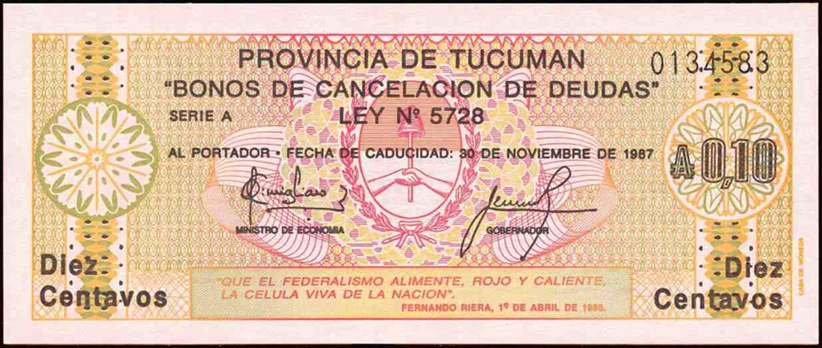
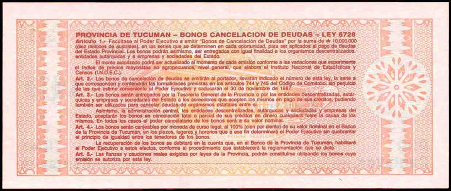
El objetivo inicial de la emisión del Bocade fue estabilizar los conflictos políticos y sociales, principalmente aquellos suscitados entre el gobierno y sus empleados (entre ellos, la policía local, implicada en protestas sociales), al brindar al gobierno provincial medios inmediatos para pagar los salarios (policía, educación, salud), que llevaban varios meses de retraso. Según Rienzo Cirnigliaro, el ministro de economía de Tucumán, el principal administrador del Bocade y el principal responsable de su buena acogida en la población:
Encontramos una caja vacía, un mes y medio de deudas salariales, gastos anticipados de las transferencias por la coparticipación, y, además, atrasos del pago de salarios de hasta 25 días (…) Mientras que la deuda al 31 de diciembre de 1984 era de 3,7 millones de australes, al 30 de junio de 1985 era de 21,5 millones, el nuevo endeudamiento del primer semestre fue de 17,8 millones. Este nuevo endeudamiento correspondía principalmente a una baja de las tranferencias federales por 5 millones, a impuestos provinciales aun por recaudar por 7 millones y a los intereses sobre las deudas contraidas por 2,8 millones … A partir de agosto de 1985, los salarios se pagaron totalmente y terminó el endeudamiento por el atraso de los pagos de salarios. La deuda total en este ámbito fue totalmente cancelada el 24 de diciembre de 1985. En cinco meses, logramos pagar el equivalente a seis meses y medio de salarios públicos, en un contexto financiero crítico y difícil. Hasta el presente, el Banco de la Provincia de Tucumán ayudó financieramente al Estado, algunos meses con adelantos del 80% de los gastos salariales totales. A fin de 1985, el saldo de la cuenta de la provincia en este banco comenzó a ser positivo. (Cirnigliaro, 2004, pp. 116-117)
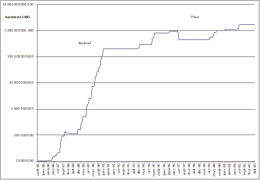
Fuente: Beckman (1985, 2001, 2002, 2003) ; Cerro (1988); Cano, Druck y Flaja
(1993); Hernandez Meson (2002); Cerro (2002).
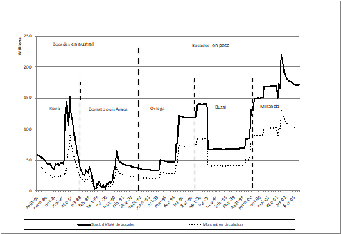
Fuente: ídem Gráfico 2 y Dirección de estadística de Tucumán para el IPC.
El stock total en circulación se tomó de Cerro (1988) para el período 09/1985 al 09/1987 y por extrapolación, sobre la base de información fragmentaria en los periódicos, para el período 10/1987 - 11/1991, tomando la tasa media sobre el período cubierto por Cerro: 59,67%. Para el período siguiente se aplicó la tasa aproximada del 60%, en base al BCRA, que ha “estimado que en promedio 60% de las cuasi-monedas emitidas se utilizaron como medio de pago” (BCRA, 2002, p. 43). Sin embargo, la circulación real se situaría entre las dos líneas del Gráfico 3.
El objetivo del bono también era sanear las finanzas públicas de la Provincia, reduciendo la deuda pública y la pesada carga que ella imponía al presupuesto, debido a su costo de emisión y al endeudamiento acumulado resultante. La eficacia del Bocade en este sentido fue demostrada por Ernesto Cerro (1988), uno de los pocos economistas que se interesó desde el principio por este bono, para quien el Bocade era claramente un instrumento de financiamiento del déficit público mucho más económico que el financiamiento a través del banco provincial y el redescuento en el Banco Central (BCRA), o mediante el mercado financiero. Así, entre agosto de 1985 y septiembre de 1987, la diferencia entre el costo mensual de emisión y funcionamiento de los Bocades y los otros modos de financiamiento fue equivalente a tasas de interés reales respectivas del 0,83% y 7,25%. Cinco años después, otro estudio confirmó que el costo de las emisiones de Bocade en australes era bajo (alrededor del 4,5% por cada emisión) y que el beneficio financiero neto del conjunto de las emisiones entre 1985 y 1991, beneficio producido por el señoreaje y el impuesto inflacionario según los autores, fue de 164 millones de pesos a precios de mayo de 1992 para el tesoro provincial, es decir, alrededor de tres o cuatro meses de ingresos presupuestarios en 1992 y 1985, respectivamente (Cano, Druck y Flaja, 1993, p. 11, 16 y 19). Como los autores de ambos estudios no evitaron criticar al Bocade9, estas evaluaciones no pueden considerarse complacientes, sino que, efectivamente, este instrumento fue muy adecuado para reducir la deuda pública.
Un tercer objetivo del Bocade: reducir la escasez de moneda, fue recordado por el ministro Cirnigliaro en el libro de su memoria política, donde considera al Bocade como "un instrumento de crédito a corto plazo" (Cirnigliaro, 2004, p. 125) con tasa de interés cero:
Elegimos crear un instrumento transitorio -los Bocades (...)- que no generaba intereses y debía resolver la escasez de moneda. (...) El Bocade tenía la ventaja de ser un préstamo del Pueblo al Estado, con una tasa de interés cero. (ibid., pp. 122-123).
Finalmente, para Cirnigliaro, el Bocade era un "instrumento de emancipación provincial" (ibid., p. 126) frente al poder invasor de Buenos Aires. Se trataba de un instrumento financiero de carácter federal en el nuevo contexto democrático posterior a la caída de la dictadura militar en 1983, una moneda con vocación regional que manifestaba simbólicamente un deseo de federalismo monetario. "En este contexto, el bono era un instrumento de emancipación provincial. Un instrumento financiero de naturaleza monetaria, pero de carácter federal." (ibid., p. 126)
Cirnigliaro no estaba lejos de considerar al Bocade como un instrumento potencial de renegociación y adaptación de la constitución monetaria federal, que permitía contrarrestar los efectos nefastos sobre las provincias periféricas, de una política monetaria centralizada en Buenos Aires. Recuerda, en sus memorias, que durante su gestión discutió con sus colegas, los ministros de finanzas
de las provincias vecinas de Jujuy, Salta, Catamarca y Santiago del Estero sobre la posibilidad de regionalizar los bonos de cada provincia, y garantizar su circulación en el Noroeste argentino (NOA) (...) dando al Banco de la Provincia de Tucumán, entonces banco público, el papel de cámara de compensación (clearing) o de caja de conversión. (ibid., p. 126)
Aunque este proyecto no continuó, tenía mucho sentido en ese momento , ya que Salta fue la primera provincia en retomar la emisión de monedas provinciales ya en 1984 (antes del plan Austral), y había influido ampliamente en la implementación de bonos del mismo tipo en Tucumán y La Rioja en 1985, así como en Jujuy en 198610.
Estas dimensiones políticas y simbólicas del Bocade no son solo producto de la imaginación de Cirnigliaro. Como él mismo recuerda, también eran compartidas por el gobernador de la provincia, el peronista Fernando Riera, quien había firmado la frase federalista en el estandarte de la primera serie de Bocade: "que el federalismo alimente, rojo y caliente, la célula viva de la Nación." (ver Figura 1, supra) Los sentimientos federalistas de los peronistas de Tucumán también hallaron eco en la actitud política pro-Bocade de los círculos empresariales de la provincia. En el anuncio publicado en la prensa del 20 de noviembre de 2001 (Figura 2), cuando la crisis del régimen de convertibilidad del peso estaba a punto de estallar, y la convertibilidad administrada del Bocade en pesos estaba amenazada por restricciones federales drásticas del abastecimiento de la provincia en pesos de curso legal, esta actitud se afirmó claramente. En aquella solicitada, la comunidad empresarial organizada alrededor de la Federación Económica de Tucumán (FET) subrayó la importancia de la "moneda de Tucumán" como medio para mantener viva la comunidad local de pagos, y realizó un llamado a la solidaridad para salvarla apoyando la confianza en el Bocade. No podría ilustrarse mejor que el Bocade era, aún en 2001, fuertemente respaldado por los intereses económicos locales, que lo consideraban no solo como un instrumento económico, sino también como una representación de sus interdependencias mutuas y de su pertenencia a una comunidad territorial de desarrollo local.
Dicho esto, las posiciones de los diversos actores no estaban exentas de ambivalencia. De hecho, el posicionamiento político de Cirnigliaro respecto al estatus y el futuro del bono era paradójico. Después de destacar su necesidad como herramienta regional de desarrollo económico en el contexto federal de Argentina, concluyó, sin embargo, con la posibilidad e incluso la necesidad de eliminar la moneda provincial una vez que las finanzas públicas estuvieran en orden (Cirnigliaro, 2004, pp. 126-27). Esto equivale a ocultar las dimensiones políticas y simbólicas que él mismo le confería y que exigían su permanencia, es decir, su institucionalización (ibid., p. 125).
En efecto, para Cirnigliaro:
la mayor virtud del bono provincial, al menos del bono tucumano tal como fue implementado, ha sido su conversión de un instrumento de crédito a corto plazo en un instrumento de defensa del poder de decisión o de la soberanía, como podemos llamarlo, de los Estados provinciales. Resulta que era un llamado federal. No era una cuestión de azar o de improvisación. (...) Estamos jurídicamente organizados como un país federal, pero de hecho constituimos un país unitario. La resolución de este problema debería ser prioritaria para reorganizar la Nación. (ibid., p. 125 y 126)
Este posicionamiento federalista de Cirnigliaro contradice sus declaraciones según las cuales, una vez que el Bocade hubiera hecho el trabajo de reducir la deuda pública, y el gobierno hubiera actuado en favor del desarrollo económico, ya no sería necesario para mantener la comunidad, y podría eliminarse. ¿Cómo puede conciliar esta visión finalmente instrumental y unitaria de la moneda (en su estado normal según el sentido común) con la del federalismo monetario que predica?.
Esta contradicción, que ilustra bien la tensión entre unicidad y pluralidad de la moneda moderna, ya señalada, es especialmente fuerte en el contexto institucional argentino, donde esta tensión lucha por encontrar formas perdurables de equilibrio. También la encontramos en la clase empresaria local y en las declaraciones de su principal organización, la Federación Económica de Tucumán (FET). Al mismo tiempo que se movilizaba a partir de 1988 para asegurar un papel permanente en la administración de la conversión de los Bocades, con argumentos que destacaban "no los intereses particulares de los miembros de la FET, sino un compromiso moral con toda la comunidad" (Operatoria Única. 17 de febrero de 1988, La Tarde), la FET también abogaba por su lenta desaparición (La FET pide el retiro de los bonos de la circulación. En un documento detallado, critica la política oficial. 3 de marzo de 1988, La Gaceta). Esta tensión entre unicidad y pluralidad monetaria institucionalizada se expresa, no obstante, bajo una forma particular y aguda en todo el Noroeste (NOA) y no solo en Tucumán, como se vio más arriba, hasta el punto que puede hablarse de un subtipo específico de cuasi-moneda provincial propio de todo este espacio y que expresa una forma compartida de equilibrio de esta tensión.
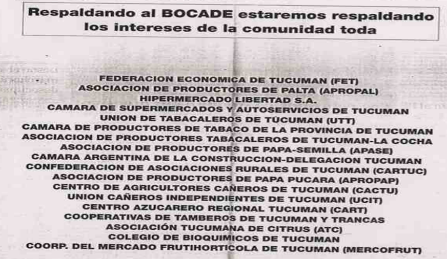
Los firmantes, preocupados por los intereses provinciales, apoyan el Bocade y la llamada Operatoria FET. La moneda de Tucumán ante todo, que durante los 16 años de su existencia ha permitido a nuestras empresas, comercios e industrias disponer para sus negocios de un flujo de divisas, es el Bocade. El Bono Tucumán nos ha permitido enfrentar las crisis nacionales sucesivas, la hiperinflación, la recesión, los ajustes de la economía nacional, etc. Hoy, las circunstancias hacen del Bocade un instrumento esencial para el funcionamiento de la economía de Tucumán. Por eso pedimos con insistencia a la comunidad en general que nos preste su ayuda todos juntos, dando un apoyo y un respaldo que recreen la confianza en esta moneda de Tucumán. Esta confianza en el Bocade también está respaldada por su convertibilidad en la moneda legal, condición garantizada por el dispositivo seguro que ha demostrado ser la Operatoria FET, y del que ninguna otra moneda u obligación provincial dispone. Pero todo este apoyo debe resultar de un esfuerzo compartido por todos, y no debe haber excepción en la aceptación de los Bocades; por consiguiente, llamamos a todas las empresas proveedoras de servicios públicos a comprometerse, en una actitud de solidaridad, a aceptar los Bocades a su valor nominal, además de un tratamiento adecuado de la conversión de los bonos en el sistema financiero. Esta forma de actuar y esta solidaridad asegurarán la eficacia y la credibilidad de esta moneda provincial que, en las circunstancias actuales de escasez monetaria, nos es necesaria.
Las particularidades respecto a otras cuasi-monedas argentinas de los bonos del tipo NOA, de los cuales el Bocade de Tucumán es una especie de ideal, son las siguientes. La primera es su mayor resiliencia: los Bocades fueron las únicas cuasi-monedas en mantenerse no solo durante el período de fuerte inflación e hiperinflación del austral, sino también en perdurar bajo el régimen de convertibilidad del peso en dólares estadounidenses (Théret 2020). Otra particularidad notable de los Bocades es que, a diferencia de los Patacones, Cecors, Lecors, Cecacors, Federales, Quebrachos, etc., que eran activos generadores de interés, no fue el caso de los Bocades. Como la Lecop federal emitida en 2001, el Bocade era una moneda puramente fiduciaria anclada en la moneda nacional y respaldada por los ingresos fiscales provinciales. Las cuasi-monedas del tipo Bocade son, por lo tanto, monedas no financiarizadas y, para este tipo de bonos, los incentivos financieros destinados a reforzar la confianza en la moneda, como la tasa de interés, fueron excluidos. El establecimiento de la confianza se basaba en el sentimiento de pertenencia provincial, en sí mismo un elemento importante de la identidad individual, y los incentivos para estimular la demanda y la tenencia de los billetes se buscaban a través de loterías, un instrumento fiscal tradicional de los Estados. No es, por lo tanto, una coincidencia que las provincias del Noroeste, la región más antigua de Argentina, sean a la vez aquellas donde la simbólica monetaria de la pertenencia provincial está más desarrollada y aquellas que eligieron el tipo del Bocade para manifestarlo. Agreguemos que lo específico de los bonos del NOA no era tanto el hecho institucional de movilizar a las cajas de conversión para asegurar su convertibilidad, ya que esto también fue el caso de la Lecor de Córdoba y del Federal de Entre Ríos, sino el hecho político de que su convertibilidad a la par, que no era fácil de mantener, especialmente en períodos de alta inflación e hiperinflación, era de facto y a veces muy explícitamente defendida por la comunidad empresarial local, incluso cuando la clase política dirigente estaba presionada para volver a la normalidad de la unicidad del peso de curso legal.
Nacimiento y primera infancia del Bocade, 1985-1987
Luego de plantear algunas consideraciones generales, pasaremos a una presentación más precisa de cómo el Bocade de Tucumán fue creado, puesto en circulación y regulado. Su acto legislativo de nacimiento -la ley 5728, de tres páginas- muestra cuán simple y breve fue el trabajo jurídico para instituirlo. Ocho artículos tratan la creación del bono y su regulación:
El artículo 1 define principalmente el monto de emisión autorizado por el poder legislativo. Establece una regla importante para posibilitar el ajuste de este monto por indexación mediante un índice de precios nacional.
El artículo 2 indica que los bonos se emitirán al portador y que tendrán una duración limitada fijada por la ley.
El artículo 3 estipula que se trata de una moneda fiscal, de un medio de cancelación de deudas del Estado provincial, emitido y distribuido por el Tesoro y detentable por todos sus organismos, que pueden utilizarlo para cancelar sus deudas. Precisa que el poder cancelatorio de un bono es igual a su valor nominal. Define el uso y la tenencia de los Bocades como basados en la libre aceptación y no en el curso legal, y especifica que serán aceptados a su valor nominal para el pago al sector público de los impuestos y e otros conceptos .
El artículo 4 establece que el Bocade es convertible a la par en moneda federal de curso legal, y que las operaciones de cambio se realizarán en el Banco de la Provincia de Tucumán, instituido así como caja de conversión local. El poder ejecutivo emitirá los decretos para definir las modalidades del cambio en efectivo (plazos, lugares y horarios).
El artículo 5 faculta el uso del Bocade para las fianzas y cauciones reales.
El artículo 6 se refiere a la posibilidad de que los Bocades paguen intereses durante los primeros tres meses de su circulación, lo que no fue el caso.
El artículo 7 autoriza al poder ejecutivo a establecer premios por sorteo a los tenedores de bonos, según las modalidades que disponga su reglamentación.
El artículo 8 sugiere a los municipios de Tucumán adoptar normas similares a las contenidas en los artículos 3 y 5 de la ley 5728.
De este modo se definió un "bono de cancelación de deudas" temporario, denominado en la unidad de cuenta federal, de curso fiscal y convertible a la par con la moneda federal de curso legal, pero solo en las condiciones específicas a fijar por el gobierno provincial.
Más allá de esta definición jurídica, el sector público tucumano introdujo el Bocade en el circuito económico a través del pago de los salarios y a sus proveedores. Se trataba de permitir al gobierno no atrasarse en pagar los salarios de los empleados públicos, como se había vuelto habitual, de este modo el bono contribuyó a reducir la conflictividad social. El Bocade regresaba luego al erario público por dos vías principales: primero, mediante el pago de los impuestos y tasas provinciales; segundo, a través de su cambio por australes en el Banco de Tucumán. El primer canal era el más cómodo para la provincia, ya que el gobierno no tenía que cambiar los Bocades por efectivo. Pero este canal era estrecho, ya que los ingresos autónomos de la provincia eran reducidos y decrecientes en proporción a sus gastos, debido a la devolución por parte del Estado federal de los gastos de educación a las provincias (Gráfico 3). Para ampliar este canal, era necesario aumentar los ingresos autónomos, una tarea muy difícil en ese momento. El segundo canal era, por lo tanto, el más importante para asegurar la credibilidad del bono, evidenciada por su tenencia estable por parte de la población y su circulación sin descuento en la esfera mercantil. En el marco de este segundo canal, lo importante no era maximizar el retorno de los Bocades a las cajas del Tesoro como en el primer canal, sino al contrario, minimizarlo. Para incentivar inicialmente la tenencia de los bonos por parte del público, se prefirieron los sorteos al pago de intereses. Estos sorteos tenían lugar cada semana, y en ocasiones excepcionales. La Caja Popular de Ahorros de la Provincia estaba encargada de gestionarlos y entregaba premios semanales de veinte veces el valor de los billetes ganadores, o para los sorteos excepcionales, automóviles de alta gama o incluso casas.
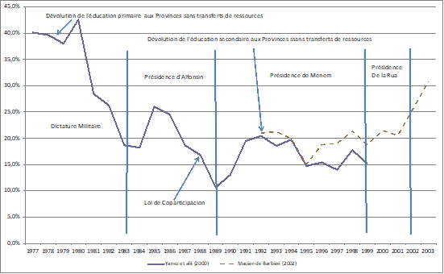
Fuente: Yañez et al. (2000), Macian de Barbieri et al. (1990 et 2002).
El principal medio para instituir la confianza necesaria para una circulación recurrente del Bocade sin pérdida de valor en los mercados de bienes y servicios era asegurar su convertibilidad a la par con la moneda de curso legal. Una de las condiciones para un uso prolongado del Bocade en los intercambios comerciales y el pago de deudas era, efectivamente, que el público creyera que se mantendría la paridad entre el bono y la moneda legal, y que en cualquier momento, dentro de un plazo razonable, podrían obtener australes de curso legal (efectivo) cambiando sus Bocades a su valor nominal. Otra condición era que las personas que necesitaban gastar su dinero fuera de la provincia pudieran también cambiar fácilmente sus bonos por la moneda nacional, a la par .
El sistema de cambio, tal como fue instituido en un primer momento, era el siguiente: el Banco de la Provincia de Tucumán, como agente financiero del tesoro provincial, actuaba como caja de emisión y de cambio. Los tenedores de Bocades podían cambiarlos en las sucursales y ventanillas del Banco, así como en la Caja de Ahorro provincial y, con un pequeño descuento, en algunos otros bancos. Pero existían restricciones: el cambio solo era posible en días hábiles y durante diez días al mes, del 18 al 28 de cada mes. Así, incluso si todos los Bocades en circulación fuesen presentados al cambio cada mes, el sistema daba tiempo al tesoro provincial, durante el período de cierre del cambio, para reunir australes y evitar problemas de liquidez. Este crédito casi gratuito como vimos anteriormente, permitía a la Provincia tratar de reducir su deuda flotante. Pero esta precaria situación, hacía financieramente crucial para el gobierno provincial -y en cierta medida también para los sectores empresariales- que el Bocade permaneciera el mayor tiempo posible en circulación en el mercado y no tuviera que reembolsarse en australes cada mes. Solo bajo esta condición podía constituir un medio para reducir la escasez de dinero. Además, el hecho de permanecer en circulación era prueba de que inspiraba confianza11.
¿Qué ocurrió realmente? El ministro Cirnigliaro lo describe de la siguiente manera:
Los Bocades se beneficiaron de una muy buena aceptación pública en tanto que, efectivamente, podían cambiarse libremente por moneda legal entre el 18 y el 28 de cada mes. El primer mes fue el más difícil (septiembre de 1985). El día 18, se produjo una verdadera avalancha en el banco. Teníamos 9 millones de australes en caja para sostener el cambio, y ese primer día se cambiaron casi 7,5 millones, mientras que el segundo día se cambió aproximadamente un millón más. Luego, prácticamente no hubo más cambios. Ese mes pagamos los salarios a tiempo, y trabajamos para reunir los 10 millones de australes que necesitábamos para el próximo cambio. Esta vez, el primer día, el monto de los cambios fue inferior al 50% de nuestras disponibilidades en el Banco provincial. En los meses siguientes, al final del período de cambio en el banco, el monto de bonos presentados para cambiar representaba el 70% del total emitido. Era una señal clara de que la gente había adquirido la confianza necesaria para que un instrumento de crédito a corto plazo funcionara como una moneda. El público lo apoyaba, al punto de que su aceptación no hacía más que aumentar. (Cirnigliaro, 2004, pp. 122–123)
Cerro también describió el funcionamiento del Bocade en sus primeros 27 meses que, como vimos, demostró su gran eficacia para reducir la deuda pública y el déficit. Sin embargo, realiza una evaluación negativa de su funcionamiento, y resalta el papel de los sorteos en su aceptación:
Incluso en el momento de su lanzamiento, los bonos no fueron acompañados de políticas destinadas a construir su credibilidad, su respaldo y la confianza. Por el contrario, los sorteos no fueron promovidos (y fueron rápidamente eliminados); el monto máximo de emisión autorizado por la Ley 5728 (10 millones de australes indexados por el índice de precios mayoristas) no fue respetado; el cambio por australes siempre fue riesgoso para los tenedores de bonos; y el Estado, lejos de mostrar una conducta rigurosa y ordenada en la gestión de sus finanzas públicas, profundizó la línea política que lo había conducido previamente a la quiebra. (Cerro, 1988, pp. 333–334)
Aunque reconoce que “el bono fue un excelente medio de financiar el déficit fiscal y evitar los costos financieros” y que “la comunidad tucumana respaldaba, poseía y utilizaba los bonos”, Cerro consideraba que “el resultado final fue negativo para la provincia” (ibid., pp. 334–335). En otras palabras, según Cerro, el sistema era bueno, pero fue mal utilizado y mal gestionado. Cirnigliaro, retrospectivamente en 2004, no está lejos de coincidir con esta evaluación12, aunque le aporta un matiz importante. Para él, el sistema era bueno pero fue efectivamente mal utilizado y mal gestionado excepto durante la administración de Fernando Riera. Critica a las administraciones de los gobernadores posteriores y describe su propia gestión, de agosto de 1985 a febrero de 1987, como exitosa (Cirnigliaro, 2004, p. 124). Al hacerlo, deja en la sombra las seis emisiones sucesivas de Manuel Apaza, su sucesor en Finanzas bajo el mismo gobernador, emisiones que elevaron el monto nominal de Bocades de 21,8 millones de australes en mayo a 120 millones en diciembre de 1987 (ver Cuadro 1 y Gráfico 4). Simétricamente, en 1988 -un año crítico en el que el Bocade experimentó su primera “pequeña crisis” (La Gaceta, 6 de febrero de 1988)-, Cerro proyecta retrospectivamente la situación del momento sobre los dos primeros años de la administración Riera, olvidando la gestión efectivamente virtuosa de Cirnigliaro, en lo que podríamos llamar los dieciocho meses de la infancia temprana del Bocade. En resumen, no se puede aceptar sin precauciones lo que escriben estos dos testigos y protagonistas de esa primera etapa.
Para valorar objetivamente lo que fue la vida efectiva del Bocade, es necesario analizarla de forma detallada, y considerarla como un proceso evolutivo que remite tanto a problemas internos de funcionamiento de su régimen monetario, como a factores externos derivados de la volatilidad de la política monetaria nacional y de la inestabilidad y/o escasez de la moneda legal. Solo de este modo puede entenderse cómo un dispositivo considerado bueno pero mal gestionado, pudo mantenerse operativo e incluso proyectarse a largo plazo.
Pasemos entonces a la historia y evolución del Bocade desde que salió de su infancia temprana en 1987 hasta su acta de defunción en 2003. Como muestran los Gráficos 2 y 3, para seguir la evolución del régimen monetario del Bocade, conviene dividir su vida en tres períodos: el período del austral, el del peso dolarizado y el del peso renacionalizado. A estos tres períodos corresponden tres edades en la vida del Bocade: su edad adulta, correspondiente al régimen del austral (1988-1991), su edad madura, correspondiente al régimen del peso dolarizado (1992–2001), y su tercera edad, correspondiente al régimen del peso desdolarizado (2002–2003). Además, como en cada una de estas etapas el Bocade atravesó una crisis que fue superada mediante ajustes institucionales, se pueden distinguir tres momentos: uno de crisis y dos de relativa estabilidad -antes y después de la crisis-, la crisis provocó un cambio institucional entre esos dos momentos, que revela una evolución fortalecedora de su resiliencia. Solo la tercera edad de esta evolución fue interrumpida bruscamente, ya que el Bocade fue cancelado en 2003 por un programa de unificación monetaria del Estado federal que eliminó todas las monedas provinciales existentes. Estas crisis de la moneda tucumana, que implicaron cambios institucionales en su mecanismo de respaldo en la moneda nacional a través de su convertibilidad, fueron, en realidad, menos de origen endógeno que reflejo local de las sucesivas grandes crisis atravesadas por la moneda nacional (1987-1988, 1990-1991, 1995-1996, 2001-2003). De esta evolución, se desprende una sorprendente plasticidad en la complementariedad entre el Bocade y la moneda nacional de curso legal, ya que el Bocade logró adaptarse a regímenes monetarios nacionales tan distintos como los del austral, el peso dolarizado y el peso renacionalizado, a los cuales se vinculó sucesivamente.
Edad adulta: el Bocade en australes, 1987 - 1991
Entre 1985 y 1991, los Bocades se denominaron en australes, la moneda (unidad de cuenta y medio de pago) creada en junio de 1985 por el Plan Austral, que tenía como objetivo controlar la alta inflación heredada de la dictadura militar (Cuadro 2). Desde agosto de 1985 hasta febrero de 1987, el Bocade fue implementado y gestionado con éxito por el ministro Cirnigliaro, quien, con una emisión moderada y beneficiado por la coyuntura económica nacional relativamente favorable debido a los efectos iniciales positivos del Plan Austral (Cuadro 2), logró su aceptación y adaptación por parte de la población, así como el apoyo activo del empresariado local. Posteriormente, a medida que la macroeconomía nacional agravaba su deterioro y la política monetaria del BCRA buscaba reducir la masa monetaria para contener la inflación en el marco del Plan Primavera, la escasez resultante de dinero y crédito condujeron, a partir de julio de 1987, a una sobreemisión de Bocades que desembocó, a inicios de 1988, en una crisis de su convertibilidad.
El cronograma de emisiones muestra claramente que la crisis fue iniciada por las emisiones de bonos realizadas por el sucesor de Cirnigliaro, el Sr. Apaza. Luego, José Domato, el nuevo gobernador electo en diciembre de 1987, heredó el problema. En los primeros meses de 1988, con ingresos fiscales y transferencias federales reducidos por la recesión (-3%), el gobierno no pudo garantizar la convertibilidad de los Bocades, que en ese momento representaban una parte importante de la moneda en circulación13. En realidad, el origen de esta crisis provincial fue el endurecimiento de la política monetaria nacional ya de por sí restrictiva, cuyo objetivo era contener la creciente inflación. La convertibilidad del Bocade se vio amenazada por el cierre casi total de la ventanilla de redescuento del Banco provincial en el BCRA, así como por la exclusión del Banco provincial del sistema de compensación del BCRA (La Gaceta, 6 de febrero de 1988).
Esta crisis de credibilidad del Bocade, vinculada a la pérdida de su convertibilidad, comenzó el 23 de septiembre de 1987, cuando el Sr. Apaza suspendió el canje de Bocades durante el período legalmente establecido para dicha operación. Esta primera crisis fue, por lo tanto, el resultado de una emisión excesiva en un contexto de estancamiento con inflación creciente (Cuadro 1 y Gráfico 4),y de las restricciones impuestas por la política monetaria federal
Incapaz de redescontar sus créditos, el Banco provincial carecía de liquidez en “australes efectivos” (efectivo). En consecuencia, el dispositivo que aseguraba la convertibilidad del Bocade se interrumpió momentáneamente. La credibilidad y la confianza en el bono estaban en juego. La tasa de descuento para cambiar el Bocade por efectivo aumentó considerablemente, y llegó, según algunos empresarios, a “un costo mensual de aproximadamente el 20%” (30 de octubre de 1987, La Tarde). Sin embargo, esta crisis no fue fatal, ya que se resolvió mediante una modificación del régimen de convertibilidad del Bocade. Además, la permanencia en circulación de los Bocades se facilitó gracias a la sustitución masiva de billetes de 50 australes por billetes pequeños de 1 y 5 australes “convertibles diariamente” (5 de octubre de 1987, La Tarde). También se instauró un nuevo dispositivo de gestión de la convertibilidad, impulsado por la Federación Económica de Tucumán (FET), la principal organización empresaria de la provincia. Así, a partir del 17 de febrero de 1988, la convertibilidad del Bocade fue gestionada en el nuevo marco de la llamada Operatoria FET, también conocida como “Operatoria confianza”.
Esta reforma del régimen de convertibilidad fue el resultado de un compromiso político negociado entre el gobierno, los sectores empresariales, el Banco provincial y la dirección regional de la CGT (la confederación de sindicatos peronistas)14. Según esta reforma, los tenedores de Bocades estaban autorizados, a partir de ese momento, a depositar en cualquier momento sus Bocades en cuentas especiales en el Banco provincial; una vez depositados, esos bonos podían ser utilizados de inmediato por el Tesoro, mientras que los tenedores debían esperar cinco días hábiles antes de que el Tesoro comenzara a convertirlos en australes, con un límite del 5% por día hábil, hasta alcanzar el 100% del monto inicialmente depositado. Esos australes eran acreditados en cuentas corrientes o de depósito, ya sea en el Banco provincial o en la Caja de Ahorro Popular.
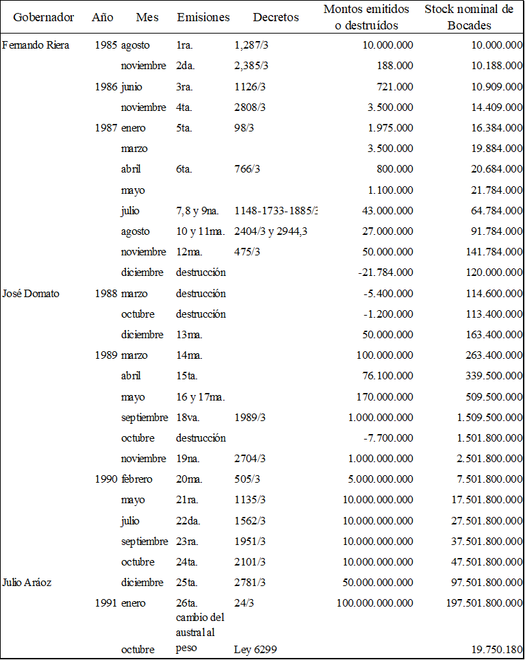
Fuente: elaboración propia, ídem Gráfico 2.
La institucionalización de esta Operatoria FET no resolvió inmediatamente la crisis, que se prolongó hasta septiembre u octubre, tal vez porque el gobierno redujo su alcance al limitar la aplicación del dispositivo al 20% del monto total de Bocades ya emitidos. Sin embargo, como el valor nominal del stock de Bocades se redujo debido a una inflación cada vez mayor (Gráfico 4) y a una disminución de su volumen de cerca de 30 millones de australes a lo largo del año 1988 hasta noviembre (Cuadro 1), la Operatoria FET se convirtió en el dispositivo institucional central que garantizaría la convertibilidad del Bocade hasta 2003, con diversas modificaciones en 1995, 2001 y 2002. La institución de la Operatoria FET marca así el paso del Bocade a su edad adulta.
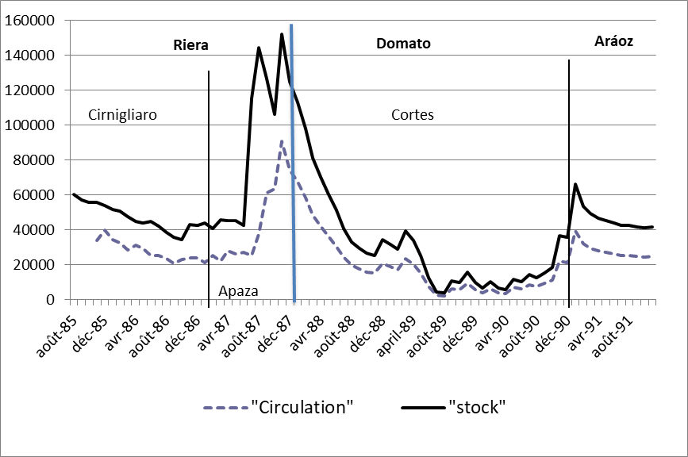
Fuente: ídem Gráfico 3
Gracias al apoyo de los empresarios locales y al ajuste negociado del régimen de convertibilidad local (Operatoria FET), la crisis de 1987-1988 no derivó en una crisis terminal del bono. Por el contrario, el Bocade pasó a considerarse como una institución monetaria eficaz, capaz de mitigar localmente las consecuencias de las turbulencias monetarias nacionales. La Operatoria FET se reveló como una innovación local capaz de transformar una gran crisis nacional en una crisis provincial de menor magnitud. Y esta capacidad se confirmó en los años siguientes, cuando la provincia fue golpeada por nuevas y grandes crisis o importantes cambios a nivel nacional, como el reemplazo del austral por el peso dolarizado en 1991-1992, la crisis del Tequila en 1995-1996, la crisis del régimen nacional de convertibilidad a partir de 1999 y la pesificación de la moneda nacional en enero de 2002. Al menos, con la institucionalización de la Operatoria-FET, el Bocade en australes logró perdurar hasta fines de 1991, y adaptarse a las hiperinflaciones de los años 1989 y 1990 (Figura 3), ya que el Plan Primavera no fue capaz de detener la dinámica de hiper estancamiento, es decir, de hiperinflación combinada con una fuerte recesión.
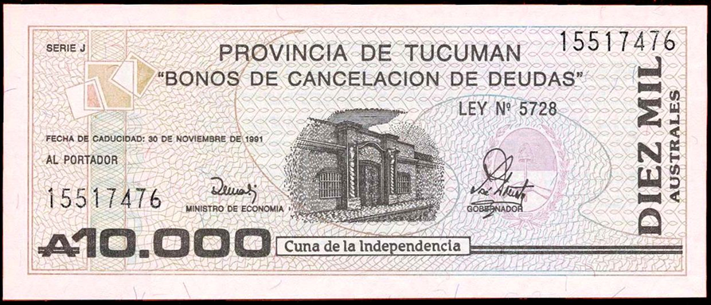
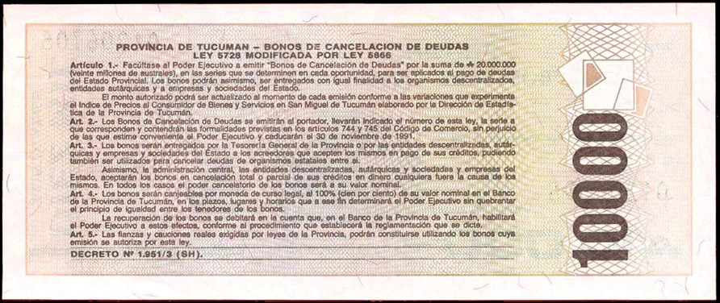
En 1989 y 1990 se observa una devaluación rápida y masiva del monto de Bocades en circulación (Gráfico 4), a pesar de que, a partir de diciembre de 1988, se realizaron nuevas emisiones masivas de Bocades en procura de mantener el poder adquisitivo de los bonos en circulación (Gráfico 4 y Cuadro 1). Pero, hasta que la inflación comenzó a disminuir a fines de 1990 (Cuadro 2), estas emisiones solo lograron reducir la velocidad de depreciación del stock de Bocades.
En 1991, con la inflación contenida y una fuerte recuperación económica en marcha (Cuadro 2), el stock de bonos se revalorizó, pero en el primer trimestre de 1991 su poder adquisitivo apenas volvió al valor que tenía en su primera emisión en agosto de 1985. Posteriormente, se observa una nueva depreciación, más lenta, hasta noviembre de 1991 -similar a la depreciación inicial de fines de 1985-, fecha en la que estaba previsto el rescate total del stock de Bocades.
Así, cuando el plan nacional de convertibilidad de julio de 1991 puso fin a la hiperinflación, los Bocades deberían haber desaparecido naturalmente, pero eso no ocurrió. Por el contrario, continuaron en circulación como moneda fiscal convertible en el nuevo patrón peso, lo que demuestra que contaban con el respaldo, la protección y, en última instancia, el manejo por parte del sector empresarial de la provincia -a veces incluso en oposición al propio gobierno provincial-, como un instrumento económico indispensable.
Edad madura: el Bocade en peso dolarizado, 1992-2001
El Bocade no desapareció con el cambio del austral a un nuevo peso dolarizado a nivel federal, convertible libremente en dólares y en circulación paralela a la par. Simplemente, nuevos Bocades en pesos reemplazaron a los Bocades en australes. La fecha límite para el reembolso de los Bocades en australes en manos del público se aplazó inicialmente hasta fin de noviembre de 1993 (Figura 4), antes de que se realizaran nuevas emisiones de Bocades en pesos. Un billete de un peso (Figura 5) equivalía a un billete de 10.000 australes (Figura 3 supra). Así, se abrió una nueva etapa en la vida de los Bocades bajo el régimen del peso dolarizado, que duró desde enero de 1992 hasta principios de enero de 2002. El plan de convertibilidad y la dolarización del peso no acabaron con el Bocade de Tucumán, como probablemente sí ocurrió con el Bocade de Salta. ¿Qué ocurrió a nivel político para que esto fuera así? Por extraño que parezca, una intervención del gobierno federal salvó al Bocade. El gobernador en funciones, Domato, considerado incompetente y cuestionado dentro de su partido (PJ), fue reemplazado en enero de 1991 por un interventor federal favorable a la continuación del Bocade.
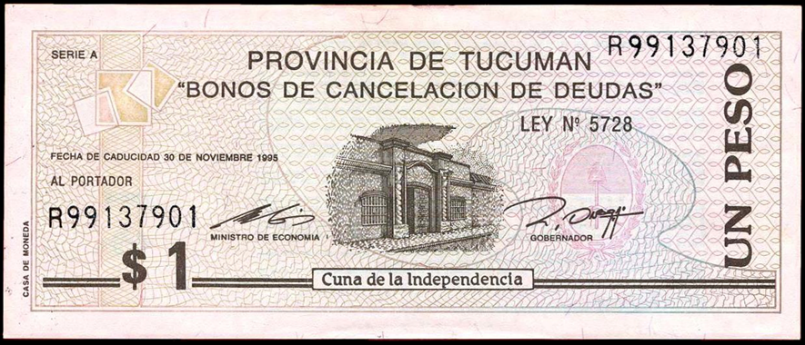
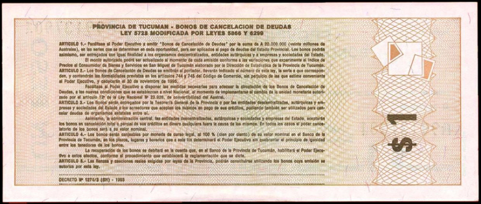
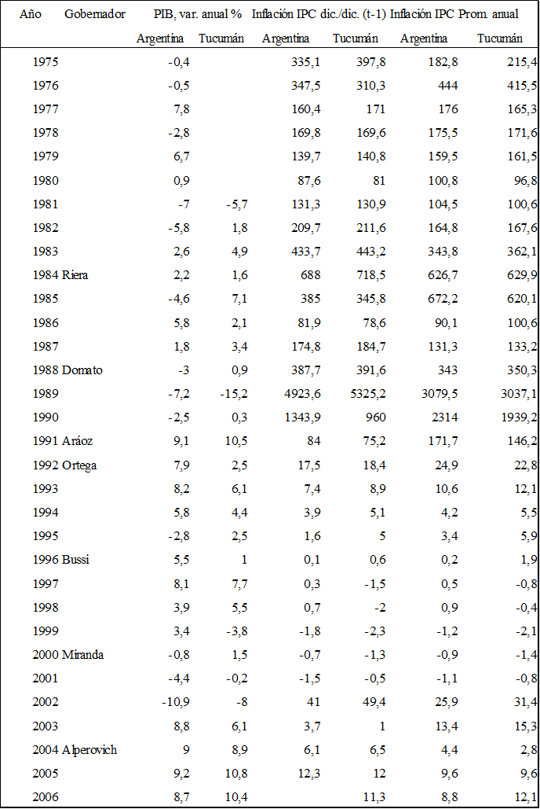
Fuente: Serie Histórica del Índice de Precios al Consumidor del Aglomerado Gran Tucumán, Dirección de Estadística de Tucumán, (consultado 26/01/2012) http://estadistica.tucuman.gov.ar/precios_consumidor.htm, Guttierez et al. 2000b e INDEC
El interventor federal, Julio Aráoz, amigo político de Carlos Menem, el presidente de la República elegido en 1989, preparó una ley para el renacimiento del Bocade, que el poder legislativo provincia aprobó en octubre de 1991. Esta Ley 6299 autorizaba la emisión de Bocades en la nueva moneda nacional que debía ponerse en circulación a comienzos de 1992. Permitía nuevas emisiones de bonos, sin modificar sus formas ni las modalidades de su conversión en peso, y se basaba en que:
Los Bonos de Cancelación de Deudas son actualmente bien aceptados en el mercado. (...) esta aceptación se fundamenta en el sistema de convertibilidad implementado por el gobierno de la provincia mediante operaciones de depósito y cambio, a través del banco provincial. (...). (...) por lo tanto, es admisible permitir al Poder Ejecutivo tomar las medidas necesarias para adaptar la circulación de los bonos de cancelación de deudas a las nuevas condiciones establecidas a nivel nacional, cuando se implemente el cambio de la unidad monetaria.15
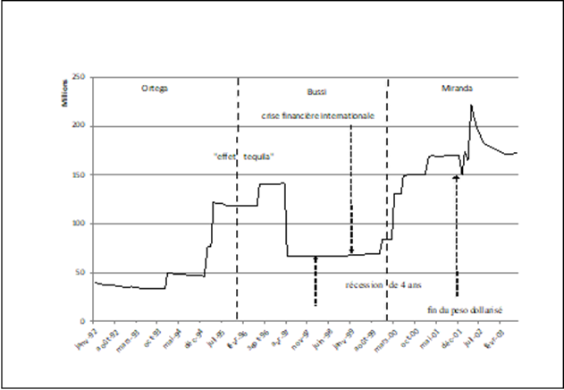
Fuente: ídem Gráfico 3
Como muestra el Gráfico 5, el régimen monetario de este nuevo Bocade maduramente pensado tuvo dos ciclos, pero el segundo quedó truncado. El primer ciclo, marcado por una leve crisis de escasez monetaria correspondiente a la crisis del Tequila, que afectó el régimen de convertibilidad del peso nacional, constituyó una réplica del ciclo del austral visto anteriormente. El segundo ciclo, en cambio, es incompleto porque su momento de crisis de escasez monetaria (2001-2002), que acompañó la crisis terminal de la convertibilidad del peso, no desembocó en una nueva fase de consolidación, sino en la muerte del Bocade en 2003, a pesar de importantes ajustes institucionales. Así, lo que se ha llamado el «tercer edad» del Bocade, correspondiente al abandono del régimen de convertibilidad del peso con el dólar, fue interrumpido por su desaparición abrupta dentro de un programa de unificación monetaria instituido bajo los auspicios del FMI.
El primer ciclo comenzó con un período de transición del Bocade en australes al Bocade en pesos, con pocas emisiones nuevas. Esta etapa duró hasta la crisis financiera del efecto Tequila en diciembre de 1994, bajo el gobierno de Ortega (1992-1996). Este episodio -recesión y crisis bancaria en 1995- fue el primer desafío para el régimen del peso dolarizado: entre principios de enero y finales de marzo de 1995, la liquidez del sistema financiero16 se desplomó de aproximadamente 9 mil millones de pesos a cerca de 4 mil millones (BCRA, 1995, p. 2), y las reservas líquidas del BCRA pasaron de 16,2 a 10,3 mil millones de dólares (ídem, p. 14). El gobierno de Tucumán reaccionó a esta escasez monetaria aumentando fuertemente la cantidad de Bocades en circulación (con vencimiento en 1999), evitando así la recesión: el PIB provincial creció un 2,5% en 1995, mientras que el PIB nacional cayó un 2,8%, mientras que en 1995 y 1996 las tasas de crecimiento total fueron de 2,7% y 3,5% para Argentina y Tucumán respectivamente (Cuadro 2). La principal lección de este episodio es que durante esta crisis (de enero de 1995 a diciembre de 1996), el aumento masivo del stock de bonos de 30 a 80 millones de pesos (Cuadro 3) no amenazó la credibilidad de los bonos ni su convertibilidad en pesos a la par.
Que la crisis haya sido más federal que provincial puede atribuirse a la existencia previa del Bocade que, pese a sobre duplicar su stock, no se depreció significativamente respecto al peso. Así lo testimonia en diciembre de 1996 el economista norteamericano Arnold Harberger, quien estuvo en Tucumán para modelizar su economía, y afirmó: “no observamos ninguna depreciación significativa en el mercado local. (...) Los Bocades son efectivamente aceptados a la par (…).” (Harberger 1996, p. 154). La Figura 6 también muestra que los Bocades eran bien aceptados en los mercados locales. Igualmente, “según el responsable del sector de cambio de bonos del Banco de Tucumán, (...) 'no hay problema con la circulación de estos billetes, porque el banco realiza su recompra normalmente, conforme a la ley'.” (La Gaceta, 24 de noviembre de 1995)
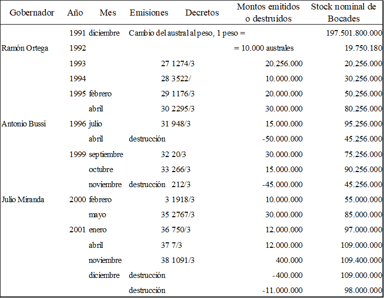
No obstante, otro artículo de La Gaceta sugiere que, en 1995, las tasas de descuento al convertir los Bocades en pesos eran muy altas, y que reinaba una “anarquía monetaria”. Sin embargo, este artículo tiene un título engañoso17 y más bien muestra que esta “anarquía”, relacionada con la pluralidad de posibilidades y costos para realizar dicha conversión, en realidad estaba organizada y, en conjunto, era poco costosa, si se excluye la especulación pura debido a la escasez del peso dolarizado:
En el cambio de monedas, los tenedores pueden perder entre 1 y 10%. (...) Entonces, como por arte de magia, (…) los “arbolitos” (cambiadores callejeros) reaparecen en la “City” como en tiempos de la hiperinflación (...). (...) [Sin embargo,] “el Banco Empresario de Tucumán implementó el cambio inmediato a pesos con una comisión del 3%. Además, existen ventanillas de cambio abiertas al público tanto en el banco Velox como en el banco municipal y en el ex Banco de la Provincia de Tucumán (BPT). Los bancos Velox y Empresario crearon cuentas de depósito para los bonos, así como otros servicios pagos. (…) El Banco de Tucumán también recompra bonos de otros bancos, pero con una comisión del 2% sobre el monto total.
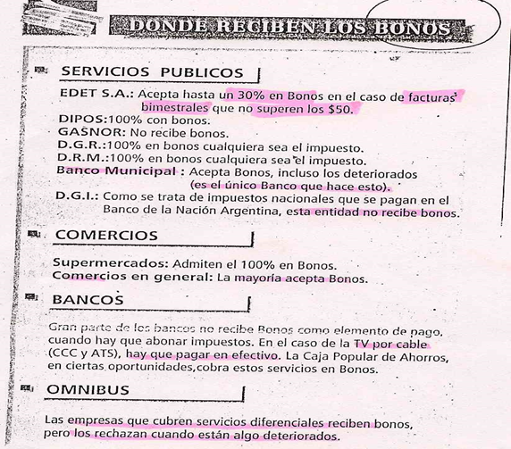
Esta cita muestra que el Bocade era bien recibido en el mercado local, pero que la aguda escasez de pesos favorecía la aparición de especuladores locales que se aprovechaban de la escasez y de la necesidad de pesos-dólar para recomprar bonos a un precio inferior a su valor de cambio en el banco y revenderlos a un precio superior a quienes deseaban utilizarlos a su valor nominal para pagar impuestos y comprar bienes y servicios. Por lo tanto, no se trataba de una situación de exceso de Bocades, sino de escasez de pesos. Dado que la falta de pesos en la caja del tesoro provincial se atribuía a la crisis del régimen nacional de convertibilidad del peso al dólar, puede pensarse que el Bocade había adquirido el estatus de una moneda buena, y que el gobierno provincial era capaz de mantener la confianza en sus virtudes para la economía provincial.
Pese a ello, el gobernador Bussi (1996-1999), ex militar que ya había sido gobernador de facto de Tucumán en 1976-1977 bajo la dictadura militar, después de continuar durante su primer año de administración (1996) con la política del gobernador anterior (Ortega), dio un giro de 180 grados en diciembre de 1996, aprovechando la salida de la crisis del Tequila, al lanzar un programa, sancionado por una ley18, de retiro total de la circulación y destrucción del stock de Bocades (Salvador, 1997). Así, Bussi abrió un nuevo período de crisis política del bono, cuestionando su existencia misma, y buscó reemplazarlo por un recurso mucho más costoso19: el endeudamiento público masivo. Como muestran el Cuadro 3 y el Gráfico 5, cincuenta millones de Bocades, casi la mitad del stock total, fueron retirados de la circulación y destruidos en abril de 1997, y fueron sustituidos por préstamos públicos a 10 años, principalmente eurobonos contratados en los mercados financieros.
No obstante, el intento de Bussi de deshacerse del Bocade no duró mucho, ya que en 1999 una nueva crisis financiera internacional afectó al Sudeste asiático, Rusia y Brasil, provocando una “fuga hacia la calidad” que impactó en los movimientos internacionales de capitales, y dejó a los países latinoamericanossin financiamiento externo . Argentina, a partir de ese momento -debido a la total dependencia de su base monetaria respecto a las entradas de capital extranjero- cayó en una recesión cada vez más profunda, que duró cuatro años. Por tanto, Bussi ya no pudo conseguir nuevos fondos en los mercados y tuvo que volver a los Bocades (Chelala, 2014, p. 66): reemplazó 45 millones de bonos a su vencimiento, y emitió 10 millones más antes de dejar el poder a su sucesor (Cuadro 3)20.
| Tipos de prestamista (%) | 1996 | 1997 | 1998 |
|---|---|---|---|
| 1. Gobierno nacional | 6 | 5 | 3 |
| 2. Banco Provincia | 6 | 2 | 2 |
| 3. Deuda flotante | 26 | 23 | 17 |
| 4. Deuda consolidada | 1 | 2 | 1 |
| Subtotal (1+2+3+4) | 39 | 32 | 23 |
| 5. Bancos e instituciones financieras | 32 | 5 | 9 |
| 6. Emisión de obligaciones públicas | 18 | 54 | 51 |
| Subtotal (5+6) | 50 | 59 | 60 |
| 7. Instituciones financieras internacionales | 11 | 10 | 16 |
| Total (5+6+7) | 61 | 69 | 76 |
| Stock total de préstamos (millones USD) | 931 | 1001 | 1047 |
Fuente: Yañez et al., 2000, Cuadro 10 y anexo estadístico.
Los dos primeros años del gobierno de Miranda (2000-2003) constituyen el último subperíodo de vida del Bocade en pesos dolarizados. Mientras la deflación persistía y la recesión se agravaba (Cuadro 2), provocando la derrota del Partido Justicialista en las elecciones presidenciales de 1999, el nuevo gobierno provincial -una alianza entre peronistas y radicales (Unión Cívica Radical)-, continuó aumentando la cantidad de Bocades en circulación: las autorizaciones legales de emisión de 42 millones en 2000 y de 12 millones adicionales en enero de 2001 llevaron el stock total a 109 millones, casi el doble de su monto en enero de 2000 (Cuadro 3). La prolongada recesión, la incertidumbre monetaria sobre el régimen de convertibilidad y el agravamiento de la escasez de pesos de curso legal, solo dejaban a la provincia el recurso de emitir bonos para pagar a sus empleados y no caer en default. Pero aumentar la cantidad de Bocades en circulación en un contexto de creciente escasez de pesos dificultaba cada vez más el cambio de Bocades a la par por pesos. Estas dificultades llevaron al gobierno provincial, a fines de julio de 2001, a implementar un conjunto de medidas.
En primer lugar, en paralelo a la operatoria FET a 35 días -el mecanismo común para cambiar Bocades por pesos al par-, se creó un sistema de cuentas de depósitos a plazo fijo (entre 90 y 180 días) para los grandes tenedores de Bocades (La Gaceta, 24 de julio de 2001). Al depositar Bocades en estas cuentas en el Banco del Tucumán, el agente financiero del gobierno provincial, estos titulares podían obtener inmediatamente cheques de pago diferido endosables o aceptados como pago hasta el 100% de los impuestos provinciales. Al vencer los cheques, sus tenedores recibían un interés máximo del 12% anual, y los Bocades se cambiaban a la par en pesos. Debido al posible costo del sistema y a su carácter desigual, el gobierno no fijó de forma definitiva los parámetros, como el monto mínimo de depósito (5.000 pesos al inicio), la duración según los recursos disponibles de la Provincia en pesos y el monto mínimo de los cheques diferidos (500 pesos al inicio), con la esperanza de que este mecanismo solo afectara entre 7 y 10 millones de Bocades21.
Además, un decreto de necesidad y urgencia, ratificado por una ley provincial, estableció un “sistema único de cuentas del sector público provincial” en el Banco del Tucumán S.A.22 En virtud de esta ley, todos los pesos (y Lecops) recibidos por las administraciones y agencias centrales y descentralizadas del gobierno provincial -con excepción de la Caja de Ahorro Popular- fueron centralizados en una cuenta única y utilizados prioritariamente para el cambio de Bocades a la par mediante la Operatoria FET y otros mecanismos, como los depósitos a plazo fijo. Esta ley también creó un Fondo único de custodia de Bocades depositados en las diversas cuentas del sector público provincial.
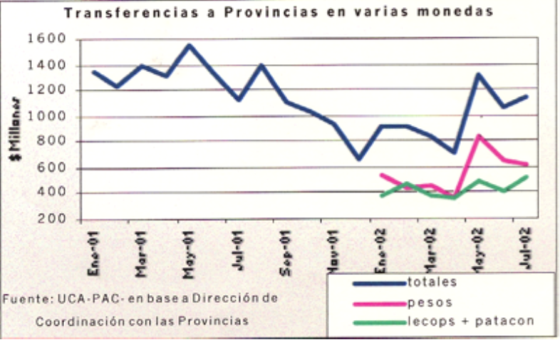
Fuente: Informe Semanal de Coyuntura Económica, 7, 14 de agosto de 2002, Universidad Católica Argentina.
Estas medidas, sin embargo, no resolvieron nada, ya que con el agravamiento de la crisis del régimen de convertibilidad del peso en el segundo semestre de 2001, los pesos escasearon aún más en las arcas de la Provincia. El gobierno nacional redujo drásticamente sus transferencias por coparticipación (Gráfico 6). Entre mayo y diciembre de 2001, éstas se redujeron a menos de la mitad, lo que provocó una proliferación de cuasimonedas provinciales en todo el país23, en respuesta a la iliquidez. El mismo gobierno nacional, para intentar cumplir sus deudas con las provincias, creó en agosto de 2001 su propia cuasimoneda, la LECOP (Letra de Cancelación de Obligaciones Provinciales)24, en forma de billetes no convertibles en pesos (y por lo tanto tampoco en dólares), destinados a reemplazar los pesos en los pagos de las transferencias federales a las provincias. Así, a comienzos de 2002, las LECOP y los Patacones de la provincia de Buenos Aires representaban casi el 50% del monto total de dichas transferencias, esto permitió su estabilización e incluso un aumento posterior (Gráfico 6).
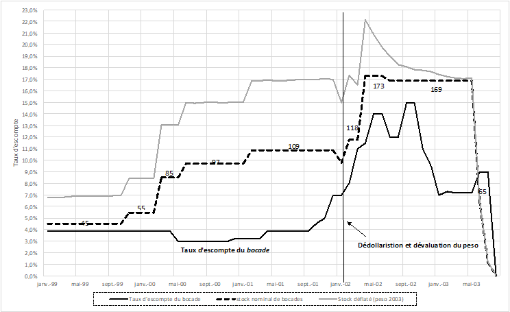
Fuentes: Elaboración propia a partir de las fuentes del Gráfico 2 y de Cerro (2002), BCRA (2003), La Gaceta (“el canje de los títulos”, varios números de 2002). Las tasas de 2002 son promedio mensuales, por ello no pueden identificarse puntos de inflexión.
En Tucumán, este aumento de la escasez de pesos efectivos prácticamente paralizó el funcionamiento de la operatoria FET. Poco antes de estallar una de las mayores crisis monetarias, económicas, financieras, políticas y sociales que haya conocido Argentina -según diversos observadores-, el gobierno provincial reaccionó y tomó tres nuevas medidas. Primero, el 15 de noviembre de 2001, extendió bruscamente de 35 a 60 días el plazo de reembolso de los Bocades en pesos a través de la operatoria FET (La Gaceta, 15 de noviembre de 2001). En consecuencia, la tasa de descuento del Bocade en el mercado, que ya había comenzado a superar ligeramente el 4% en octubre (desde que en mayo se planteó extender el plazo a 45 días), se disparó inmediatamente al 7% en diciembre (ver Gráfico 7). La medida, tomada sin consulta previa, provocó de hecho un crack: los bancos se negaron a recibir los bonos y, en el mercado libre de casas de cambio (cuevas), los Bocades se cambiaban con un descuento del 10% (La Gaceta, 16 de noviembre de 2001, p. 9)25. Sin embargo, como lo demuestra el anuncio publicado el 20 de noviembre en la prensa por la FET y otras diecisiete organizaciones de empresarios industriales y agrícolas de diversos sectores (Figura 2 supra), estas seguían apoyando al Bocade, solicitando únicamente ajustes y flexibilidad en la aplicación del nuevo dispositivo.
Otra medida, también controvertida, fue la instauración por decreto, en diciembre de 2001, de una operatoria paralela que permitía a ciertas empresas -con depósitos superiores a 40.000 pesos- obtener LECOP sin tener que esperar el plazo estándar de la operatoria FET (Beckmann, 2002, p. 2; Cirnigliaro, 2004, pp. 267-268). Ese mismo mes, finalmente, se destruyeron y/o no se reemplazaron 11 millones de Bocades sospechados de duplicación, y una ley estableció que las empresas públicas y privadas que prestaban servicios públicos debían aceptar Bocades y LECOP a su valor nominal, sin ninguna limitación26. Estas medidas limitaron al 7% la tasa de descuento media del Bocade en diciembre, pese al estallido social en curso que, a comienzos de enero de 2002, daría lugar a un nuevo régimen monetario a nivel federal.
Tercera etapa: el Bocade en pesos renacionalizados, 2 de enero de 2002 – 27 de marzo de 2003
La crisis del régimen de convertibilidad, que alcanzó su punto máximo a fines de diciembre de 2001, condujo efectivamente el 6 de enero de 2002 a un cambio radical en el sistema monetario nacional con el abandono del régimen de caja de conversión y el regreso a un peso nacional desdolarizado, lo que se conoce como pesificación. En el año 2002 Argentina sufrió una crisis económica y social muy profunda, con una caída del PIB de aproximadamente el 11% y una fuerte devaluación del peso, acompañada de una inflación principalmente importada, con un alza de los precios al consumidor del 41% en el Gran Buenos Aires (diciembre a diciembre, ver Cuadro 3 supra).
El cambio de régimen monetario fue acompañado de importantes disturbios sociales, una gran inestabilidad política y un fuerte aumento en las desigualdad, debido a las modalidades asimétricas de la pesificación, que dejó a más del 55% de la población por debajo del umbral de pobreza (Calcagno, 2019, p. 99). En Tucumán, la crisis también fue extremadamente grave y multidimensional; el PIB cayó un 8% y la inflación de los precios al consumidor alcanzó al 49,4% en el Gran San Miguel de Tucumán (diciembre a diciembre, Cuadro 3).
La convertibilidad del Bocade a la par con el peso sufrió una crisis de credibilidad aún más fuerte que las anteriores, y se hizo muy difícil garantizarla. Los depósitos de Bocades quedaron inmovilizados durante varios meses en las diversas cuentas de la operatoria FET.
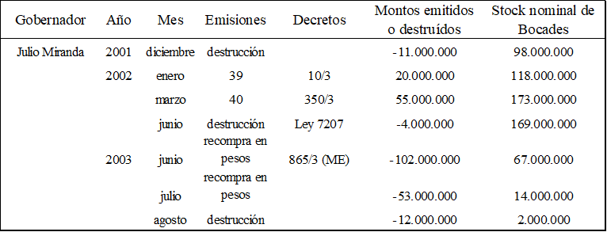
A pesar de los problemas de convertibilidad que ya había experimentado el Bocade en 2001, el gobierno de Miranda realizó nuevas emisiones en enero y marzo de 2002 por 20 y 55 millones de Bocades, respectivamente (Cuadro 5), respaldados por el nuevo peso desdolarizado. Esto elevó el stock nominal de 98 a 173 millones de pesos, y aumentó considerablemente las dificultades para garantizar el valor nominal y la convertibilidad a la par del Bocade. Estas emisiones se justificaron por el estado de necesidad y urgencia que la crisis del peso provocó en la Provincia, combinada con la pesada carga de la deuda pública heredada del gobierno de Bussi, que le imposibilitaba, por ejemplo, pagar puntualmente los sueldos de los empleados públicos.
El Estado federal, que también se encontraba estrangulado financieramente y en default de sus deudas interna y externa, se endeudó fuertemente con las provincias. En septiembre de 2002, en el peor momento de la crisis del Estado federal, “la deuda de la Nación con Tucumán ascendía a 182,5 millones de pesos” (La Gaceta, 4 de septiembre de 2002). Desde abril, los distintos mecanismos de la operatoria FET fueron perturbados y luego bloqueados27, pese a una leve mejora en junio y julio28, y el cambio de Bocades por pesos prácticamente sólo era posible en el mercado paralelo de cuevas y casas de cambio, con descuentos muy altos (ver Gráfico 7). Así, la tasa media mensual de descuento del Bocade respecto al peso fue 11,5% en abril de 2002, 14% en mayo y 15% en septiembre y octubre, niveles nunca antes observados29. Además, los intentos por reducir el stock de Bocades fueron débiles30.
La confianza comenzó a recuperarse recién alrededor del 20 de octubre, fecha en la que la tendencia alcista de la tasa de descuento se revirtió, pasando del 16% al 13% entre el comienzo y el final del mes31. La demanda de cambio de bonos en las casas de cambio y cuevas disminuyó, debido a un “aumento del 40% en las transferencias por coparticipación”. También contribuyó que el BCRA se declaró “dispuesto a emitir más pesos para recomprar bonos a su valor de mercado” (La Gaceta, 31 de octubre de 2002), en el marco de una posible recompra federal de todas las cuasimonedas, negociada entonces entre el FMI y el gobierno nacional. A esto se sumó que la inflación de 2002 (más del 30% anual promedio) redujo el poder adquisitivo del stock de Bocades a su nivel de fines de 2001 (Gráfico 7), y que, a comienzos de 2003, la tasa de descuento promedio del Bocade volvió al 7%, el mismo nivel que en diciembre de 2001, y se estabilizó en ese valor durante el primer trimestre de 2003. Así, en diciembre de 2002, el diario La Gaceta observaba día a día que “continúa una lenta caída en el cambio de Bocades” (7 de diciembre), que en las cuevas faltaban bonos (Sigue la escasez de bonos en las cuevas, 10 de diciembre; Las cuevas se quedaron sin Bocade, 20 de diciembre), que el peso efectivo “continúa depreciándose” (14 y 17 de diciembre) y que “la tasa de descuento de los Bocades se reduce” (24 de diciembre).
Esta evolución positiva fue acompañada por varias innovaciones institucionales que, desde octubre de 2002 y especialmente en diciembre, reunificaron la operatoria FET y organizaron el retorno a una mejor convertibilidad del Bocade. Dado que se trataba de medidas innovadoras y potencialmente sostenibles, como fue en su momento la creación de la operatoria FET en la crisis de 1988, merece la pena examinarlas con detalle.
En septiembre de 2002, en el peor momento de la crisis provincial, el nuevo ministro de Economía, Osvaldo Jaldo, se enfrentaba a una disyuntiva: emitir nuevos Bocades para sustituir los pesos ausentes o declarar inconvertibles los Bocades ya existentes. Dado que en ambos casos la credibilidad del Bocade podía derrumbarse, optó por una tercera vía: aplazar en el tiempo las obligaciones de cambio de la provincia mediante nuevos instrumentos financieros. Además de aplicar medidas clásicas como recortes en todos los rubros del presupuesto -incluidos los gastos fiscales- y anticipar el cobro del impuesto a las empresas exportadoras beneficiadas por la devaluación (La Gaceta, 12 de septiembre de 2002), el gobierno diseñó un mecanismo que le permitió convertir sus deudas por Bocades en medios de pago, y escalonar su reembolso en el tiempo.
Con ese fin, mientras negociaba con el Estado federal la reanudación de las transferencias en LECOPs, Jaldo programó la creación de instrumentos monetario-financieros desde septiembre para activar los Bocades bloqueados por la falta de liquidez federal, (La Gaceta, 10 de septiembre de 2002). Implementó dos leyes del 2 de agosto y del 10 de septiembre de 200232, debatidas ampliamente en la Legislatura tucumana desde junio33. Estas leyes redujeron de 56 a 35 días el plazo de conversión de los Bocades vía operatoria FET y crearon derivados monetarios de los Bocades pendientes de cambio, ya que el Poder Ejecutivo quedó autorizado a emitir órdenes de pago y/o cheques de pago diferido en favor de los depositantes, equivalentes al monto depositado, instrumentos transferibles, divisibles y endosables por terceros (artículo 2 de la Ley 7227). La intención era reunificar el régimen de conversión, al extender el cambio directo de la operatoria FET paralela -muy criticada por beneficiar solo a grandes empresas34 - y poner en circulación sustitutos monetarios de los Bocades inmovilizados.
Jaldo buscaba resolver el problema de los 65,4 millones de pesos acumulados como deudas en la operatoria FET, por el vencimiento de plazos de pago de Bocades, convirtiendo la mayor parte en instrumentos de pago circulantes como moneda. Se crearon dos tipos de instrumentos. El primero consistía en cheques de pago diferido, de al menos 1000 pesos, con interés y transferibles, este tipo de instrumento ya se había utilizado (Ley 7227, ver más arriba) y fue usado tradicionalmente en Argentina para pagar los aguinaldos a los funcionarios35. Se emitirían para cancelar deudas vencidas y evitar descuentos en el mercado, garantizados por un porcentaje de los recursos libremente disponibles (pesos y LECOPs) del Tesoro36. El segundo instrumento era totalmente novedoso, y consistía en Documentos de Cancelación de Obligaciones Fiscales (DoCOF): en pesos, transferibles y aceptados a valor nominal para pagar impuestos provinciales, similares a los actuales certificados fiscales transferibles37, muy usados hoy en Italia. Permitían a los contribuyentes pagar obligaciones fiscales, y de forma general, a los ciudadanos cancelar sus deudas con el Estado, y, al mismo tiempo, ayudar al Estado a cancelar sus propias deudas, aunque no generaban intereses eran transferibles, y tenían fecha de vencimiento.
La Ley 7.25238, vigente desde el 26 de diciembre de 2002, autorizó la emisión simultánea de ambos derivados del Bocade, para cancelar, prioritariamente, en una primera etapa, las deudas generadas por los vencimientos de Bocades depositados en la operatoria FET con plazos anteriores al 10 de octubre de 2002 (28, 56 y 35 días, según el artículo 1). Y también estableció un nuevo régimen de conversión del Bocade, que organizó como un mix de pesos efectivos o cuasi-efectivos (como LECOPs) para las deudas menores a $15.000; cheques diferidos para las deudas entre $15.000 y $30.000; y DoCOFs para montos mayores, según una fórmula mixta. Este régimen permitió recuperar la liquidesz, al reactivar la circulación de los Bocades inmovilizados, que representaban entonces casi el 40% del stock total.
A principios de junio de 2003, el 47,7% de los Bocades inmovilizados y el 18,3% del stock total seguían en mora en las cuentas de la Operatoria FET, mientras que sus tenedores solo podían utilizar este sistema mixto hasta fin de junio. Por ello, el 5 de junio, este sistema se modificó por decreto y por la Ley 7.276, para incluir a acreedores rezagados39. Como la aceptación de DoCOFs para deudas mayores a $30.000 era problemática40, la nueva ley obligó su aceptación para todos los tenedores demás de 30.000 Bocades. Asimismo, extendió su validez a 3 años (antes era de 365 días, renovable una vez) y amplió la fecha de vencimiento de las deudas fiscales compensables en DoCOFs hasta el 31 de diciembre de 2002 (en lugar del 30 de junio). Además, estableció los porcentajes de obligaciones fiscales pagaderas con DoCOFs según los diferentes impuestos, autorizó al poder ejecutivo a modificar estos porcentajes, y a emitir cheques de pago diferidos a partir del 1 de julio de 2003, para cancelar DoCOFs no utilizados.
Aunque estas medidas parecían extemporáneas, porque coincidieron con el inicio del Programa de Unificación Monetaria (PUM) destinado a instituir un “nuevo orden económico y financiero” fundado en el retorno a la unicidad monetaria (ver má abajo), demuestran que el gobernador Miranda y la Legislatura aún creían necesario “preservar el potencial de los instrumentos de crédito apropiados de los que la gestión de los asuntos del Estado pueda prevalerse en todo momento en el futuro” (Decreto 1208/3(ME)). Es posible que las clases dirigentes de la Provincia pensaran todavía que el Bocade tenía futuro. Al convertir Bocades inmovilizados en una moneda fiscal no convertible pero transferible (DoCOF), el sistema mixto de la FET estableció un régimen de compensación interna entre gastos e ingresos provinciales, que devolvió liquidez a la provincia y redujo su dependencia de la moneda federal.
También parecería que los gobernantes comprendieron que la crisis del Bocade de 2002 no se debía tanto a una emisión excesiva, ya ella respondía a la necesidad de asegurar la continuidad de los servicios públicos y la paz social, sino más bien a la extrema escasez de pesos, lo cual no solo bloqueaba el funcionamiento de la Operatoria FET, sino que también provocaba un aumento del descuento del Bocade en el mercado. Una parte considerable de los Bocades (el 38,5% al 10 de octubre de 2002) no circulaba, y la parte que sí lo hacía, también perdía poder adquisitivo (Gráfico 7), lo que limitaba doblemente su eficacia contracíclica. La reforma de diciembre de 2002, con la invención de los DoCOFs y la reactivación de los cheques de pago diferido, fue una respuesta a este doble problema: por un lado, permitía reintroducir liquidez mediante el crédito representado por los cheques diferidos (y potencialmente por los DoCOFs); y por el otro, gracias a la moneda de crédito fiscal interna al circuito del tesoro provincial -los DoCOFs, la dependencia del Bocade respecto al peso se reducía parcialmente. De este modo, el dispositivo ideado y la reorganización del funcionamiento de la operatoria FET que este permitió, inscribió a los promotores de estas reformas en una dinámica de relanzamiento de la «moneda tucumana», en consonancia con su historia y de manera similar a lo ocurrido en ciclos anteriores. Esto iba, por lo tanto, en contra del programa de unificación monetaria, cuyo objetivo era precisamente la desaparición del Bocade. Sin embargo, ya en abril de 2003, debido a la promesa del regreso de la moneda federal a las provincias, los poderes ejecutivo y legislativo provinciales optaron de manera voluntaria por la reunificación monetaria. Aquí reaparece la ambivalencia de la clase dirigente provincial respecto de su moneda, señalada más arriba, por Cirnigliaro, el fundador del Bocade, y en la Federación Económica de Tucumán.
El dispositivo implementado a fines de diciembre de 2002 llegó demasiado tarde, ya que desde el 24 de enero de 2003, el gobierno de Eduardo Duhalde y el FMI habían firmado un acuerdo stand-by transitorio41. Este acuerdo benefició a la Argentina con un crédito para pagar pagar sus deudas con los organismos financieros multilaterales, vencidas entre el 24 de enero y el 31 de agosto de 2003, aunque a cambio de eliminar las cuasi-monedas provinciales en el transcurso de ese año42. En estas condiciones, no sorprende que solo el 50% de los tenedores de Bocades bloqueados en las cuentas de la operatoria FET aceptara voluntariamente el nuevo dispositivo. Para los grandes tenedores de Bocades, ¿qué era preferible hacer en ese momento? ¿Retener los Bocades con la esperanza de que, cuando llegara su eliminación definitiva, su tasa de descuento fuera baja? ¿O convertirlos en DoCOFs a la paridad, para pagar impuestos provinciales o descontarlos? La respuesta no era evidente, ya que la masa fiscal provincial que podía pagarse con DoCOFs era reducida, y probablemente aún no existía un mercado para ese tipo de crédito fiscal transferible, sin interés. Por lo tanto, podía anticiparse que la tasa de descuento de los DoCOFs sería incluso superior a la tasa de cambio en pesos aceptada para los Bocades.
Muerte del Bocade: el Programa de Unificación Monetaria, del 28 de marzo al 31 de diciembre de 2003
El hecho de que el stand-by entre el gobierno de Duhalde y el FMI contemplara la eliminación, en el plazo de un año, de las cuasi-monedas provinciales, fue, por cierto, una exigencia del organismo. Durante las negociaciones sobre este tema, la oposición del gobierno argentino lo presentaba como una contrapartida de la obtención de ese crédito. Sin embargo, la unificación monetaria ya era un objetivo de la ley del 6 de enero de 2002, que puso fin al régimen de la convertibilidad del peso con el dólar. Esta ley, impulsada por ese mismo gobierno, estipulaba:
En los plazos y según las modalidades debidamente establecidas por vía reglamentaria, el Poder Ejecutivo Nacional adoptará las medidas necesarias para proceder al canje de los títulos nacionales y provinciales que hayan sido emitidos como sustitutos de la moneda nacional de curso legal en todo el territorio del país, sujeto al acuerdo previo con todas las jurisdicciones provinciales43.
No sorprende que, dos meses después del acuerdo del 24 de enero, los acontecimientos se precipitaran. El 28 de marzo de 2003, se establecieron los lineamientos generales del Programa de Unificación Monetaria (PUM) mediante el decreto 743/2003, que entre otras medidas, fijaba el 31 de enero de 2003 como fecha límite para determinar el stock total de cuasi-monedas que serían tomadas en cuenta. El 9 de abril, una resolución del Ministerio de Economía de la Nación que operacionalizaba el decreto 743, comunicó la existencia de un Acuerdo de Reunificación Monetaria fechado el 3 de abril, en el cual
las Jurisdicciones Provinciales han reafirmado su voluntad de realizar la unificación monetaria, cristalizando el consentimiento previsto en el artículo 12 de la Ley 25.561 (…)44.
El 23 de abril, un segundo decreto45 federal incluyó a las Lecops dentro del PUM y precisó los tipos de préstamos que se utilizarían para financiar la recompra de todas las cuasi-monedas por parte del BCRA46. Una segunda resolución del Ministerio de Economía, fechada el 28 de abril, estableció el 12 de mayo como la fecha límite para que las provincias confirmaran, por ley, su adhesión al PUM y delegaran la administración de las operaciones al gobierno federal. Acto seguido, el 30 de abril, se lanzaron las emisiones de dos bonos federales: el Boden 2% 2011 y el Boden 2% 2013. En ese punto, la pelota quedó del lado de las provincias que, al no haber sido consultadas sobre el funcionamiento ni la hoja de ruta del programa, llevado adelante con firmeza por las autoridades federales47, no tuvieron otra opción que aceptar las condiciones literalmente o retirarse.
El 2 de mayo, la ley 7271 aprobada por la Legislatura de la Provincia de Tucumán confirmó la adhesión de la provincia al PUM y delegço en el Estado Nacional la recompra y destrucción de sus 169 millones de Bocades, asumiendo la responsabilidad de esa operación mediante el reembolso de los préstamos federales contratados con ese fin. Un decreto provincial del 6 de mayo, que puede considerarse el acta de defunción del Bocade, detalló estos compromisos, y adoptó plenamente la hoja de ruta y las exigencias federales48. Inmediatamente después, el 7 de mayo, el BCRA envió una Comunicación a la provincia donde detallaba el modus operandi de la recompra de los Bocades49. Posteriormente, el 14 de mayo, una ley federal ratificó la creación del PUM y el depósito de los Boden 2011 y 2013 en una cuenta especial en el BCRA50. Estas operaciones fueron detalladas el 21 de mayo en una nueva resolución del Ministerio de Economía51. Finalmente, el 22 de mayo, el gobierno federal decretó que aceptaba la misión confiada por la Provincia de Tucumán52.
A continuación, el 30 de mayo, el BCRA comunicó a la provincia un calendario estricto de operaciones y los métodos de recompra de los Bocades en cinco tramos (Cuadro 6). El primero de ellos sería una licitación entre las instituciones financieras activas en la provincia, a realizarse del 2 al 5 de junio y que concluiría el 6 de junio con la fijación del “precio de corte” del Bocade en pesos y las adjudicaciones. Posteriormente, del 6 de junio al 14 de julio, se llevaría a cabo la recolección y destrucción de los billetes desmonetizados53. A solicitud de la Provincia, las fechas de cierre de la licitación y de fijación del precio único se postergaron al 9 y 10 de junio, y el plazo para la recolección se extendió al 21 de julio54. El 10 de junio comenzaron también las operaciones de recompra y destrucción correspondientes a los otros cuatro tramos, cuya fecha límite de finalización era el 31 de julio. Pasada esta fecha, la provincia debía emitir títulos escriturales sustitutivos, preformateados por el Ministerio de Economía federal, para absorber los últimos Bocades aún en circulación55.
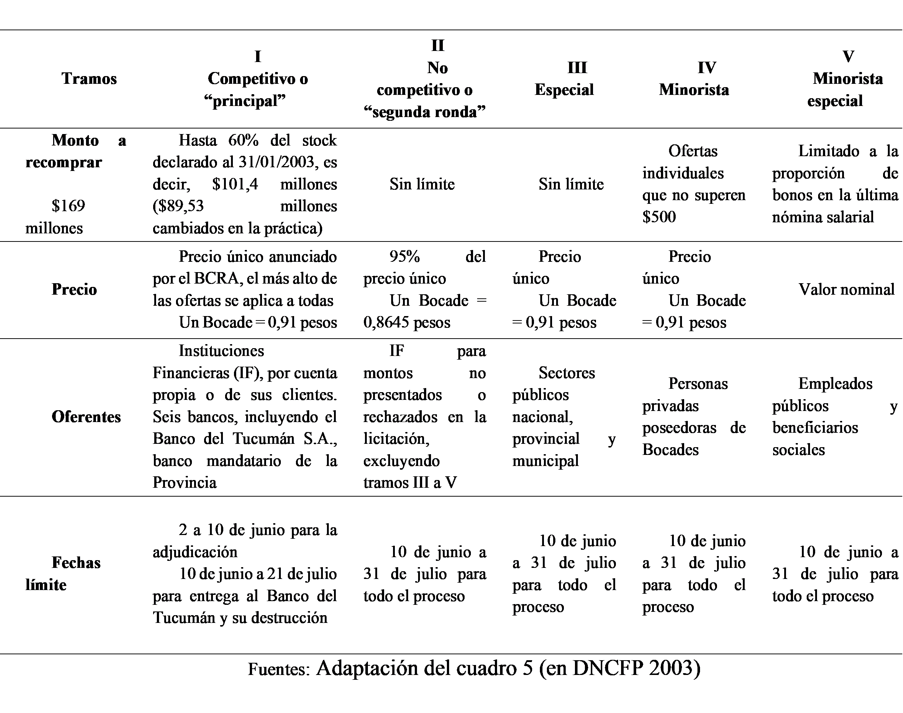
El mecanismo establecido por el PUM
El dispositivo implementado por el Programa de Unificación Monetaria (PUM) consistió en eliminar las monedas provinciales mediante su recompra a "precio de mercado", y hacer que las provincias asumieran íntegramente el costo de la operación, aunque diferido en el tiempo. Más concretamente, como establece el decreto fundador del PUM, cada provincia firmante debía
delegar la recompra de su moneda al Estado nacional, asumiendo a su vez la totalidad de la deuda generada, mediante la afectación de los recursos provenientes del régimen de coparticipación federal de impuestos56.
El financiamiento del programa se apoyó enteramente en la emisión de títulos de deuda del Tesoro (los Boden 2% 2011 y Boden 2% 2013) depositados en una cuenta especial en el BCRA; a cambio, este último creaba pesos con los que recompraba los bonos a sus tenedores antes de destruirlos. A las provincias solo quedaba reembolsar mensualmente esos préstamos al BCRA durante 8 y/o 10 años (con intereses), ello se realizó mediante descuentos automáticos sobre los ingresos de coparticipación federal.
El precio único de recompra se fijó a partir del llamado a licitación de la primera tanda de Bocades, de ahí que se calificara esta etapa como competitiva. No obstante, también se la denominó principal, ya que, más allá de sus adaptación a situaciones específicas de los tenedores de Bocades, ese precio único sirvió como referencia para todos las demás tramos, salvo el tramo V, correspondiente a los empleados públicos y beneficiarios sociales (Cuadro 6). El tramo I abarcaba hasta el 60% del stock total y estaba destinado a cubrir todos los Bocades en posesión de los bancos residentes. Estos fueron convocados a ofrecer cantidades de Bocades junto con precios de oferta. Estas propuestas, recogidas por el BCRA, le permitieron establecer un precio único correspondiente al precio más alto propuesto, el que se aplicó a todas las ofertas. El pago a los bancos vendedores se realizó mediante transferencias a sus cuentas en el BCRA, tras la entrega de los Bocades vendidos. Este precio único, fijado en 0,91 pesos por cada Bocade, no tenía nada de verdaderamente competitivo: no surgió de la observación de los precios en los mercados competitivos como las casas de cambio o las cuevas57. Fue un precio administrado, elaborado conjuntamente por el Ministerio de Economía y el BCRA, basado únicamente en las propuestas de los bancos públicos y privados con presencia en la provincia, incluyendo al banco agente financiero del Estado provincial, entidades que poseían bonos por cuenta propia o de terceros.
Los montos y precios ofrecidos por los seis bancos que poseían Bocades fueron publicados por el BCRA y están agrupados por banco en el Cuadro 7, de allí surge que el Banco del Tucumán S.A. (antiguo banco provincial privatizado en 1996) fue quien fijó el precio.
El Cuadro 7 muestra que alrededor del 70% de los depósitos bancarios en Bocades estaban concentrados en el Banco de Tucumán, en parte porque, como agente financiero del Estado provincial, gestionaba las cuentas de la Operatoria FET, donde al 5 de junio de 2003 seguían bloqueados más de 31 millones de Bocades, es decir, la mitad de los que este banco ofreció en la licitación.
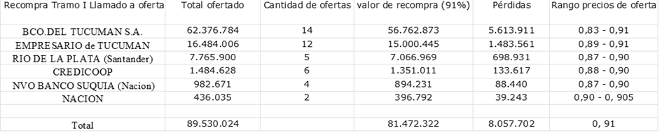
También el Banco del Tucumán fue quien ofreció el precio más alto, es decir, el precio único de 0,91 pesos por Bocade, vinculado a una oferta importante de 21 millones de Bocades. Sin embargo, la tasa de descuento promedio mensual del mercado ya había bajado al 7,2% desde enero de 2003 (Gráfico 7 ). Esto sugiere que la depreciación del 9% ofrecida por el banco no reflejaba fielmente una situación de mercado competitivo. El precio elegido fue más bien el resultado de un compromiso político entre diversos intereses, cuya interpretación socioeconómica aún está por realizarse. Cabe destacar que tanto los bancos como la provincia, ya adherida al PUM, tenían interés en que el precio fuera bajo, para reducir las respectivas cargas de su reembolso: los primeros, con sus clientes; la segunda, con el BCRA, para amortizar los Boden 2013. Por el contrario, los empresarios, los servicios públicos y demás tenedores de Bocades -especialmente los empleados públicos y los beneficiarios sociales- que usaban estos bonos a la paridad con el peso en su vida diaria, tenían interés en un precio más alto, para minimizar la pérdida de poder adquisitivo. Probablemente por ello, y para evitar disturbios sociales que pudieran cuestionar la adhesión de la provincia al PUM, todos ellos recibieron un tramo especial de reembolso a la par.
Finalmente, dos millones de Bocades no fueron canjeados en ninguno de los cinco tramos del PUM (Cuadro 5), y la provincia tuvo que desmonetizarlos directamente, canjeándolos por “títulos escriturales sustitutivos” emitidos en noviembre de 2003, como establecía el PUM (BCRA, 2004, p. 61)58. Con esta operación, en diciembre de 2003, el Bocade exhaló su último aliento.
El Bocade, que había superado hasta entonces varias crisis mayores, no sobrevivió al colapso del régimen de la convertibilidad ni a la re-pesificación. Hasta 2003, el bono tucumano se había mostrado “difícil de matar”: había
resistido a la hiperinflación de Alfonsín, a la convertibilidad de Menem, a los ajustes del FMI, a los ajustes del gobierno federal, a la falsificación, a la sobreemisión de Ortega, de Miranda y de Alperovich59 e incluso el ataque de Bussi, que transformó un préstamo del pueblo sin intereses en un préstamo a tasa alta de los bancos y los mercados. Finalmente, le torció el brazo a los porteños, ya que, tras 16 años de críticas a los bonos provinciales, estos terminaron emitiendo una hermana menor, la Lecop. (…) Durante los 17 años de su existencia, fue fuertemente apoyado por los empresarios locales, quienes comprendieron que el bono les permitía trabajar con tranquilidad. (Cirnigliaro, 2004, p. 125)
La muerte programada del Bocade, por tanto, no tuvo el mismo significado histórico que la de las otras cuasi-monedas, especialmente de aquellas más recientes como el Patacón o el Federal. A diferencia de estas, en 2003, el Bocade tucumano tenía una larga trayectoria; y era una moneda confiable, tanto en el plano práctico y jerárquico como ético60, como lo demostró, por ejemplo, su rol para amortiguar las crisis del Tequila en 1995 y del peso dolarizado en 2001. El Bocade formaba parte de las costumbres monetarias locales y estaba integrado en las prácticas cotidianas; existía un consenso político local que garantizaba su convertibilidad administrada; y, como moneda tucumana, simbolizaba la autonomía de la provincia y su resistencia al centralismo y a la arbitrariedad del Estado federal.
No obstante, el Bocade también tuvo enemigos políticos. Algunos, dentro de la provincia, como el gobierno de Bussi, que buscaba reanudar el endeudamiento con los mercados e instituciones financieras. Otros externos, como los economistas ortodoxos instalados en los organismos federales, como el Ministerio de Economía y el BCRA, o internacionales, como el FMI o el Banco Mundial. Para estos economistas, formados en la lógica de la unicidad monetaria,
la recuperación del monopolio de emisión por parte del Banco Central era condición necesaria para la normalización del sistema monetario y financiero” (BCRA 2004, p. 61),
y por lo tanto, todas las cuasi-monedas debían eliminarse, porque:
erosionaban la capacidad del banco central para llevar a cabo una política monetaria (...); complicaban el compromiso de gestión fiscal (...); contribuían al crecimiento de la economía informal y a la evasión fiscal (...); tenían un efecto negativo sobre el comercio interprovincial (...); generaban importantes desvíos del comercio, fomentando ineficiencias regionales y tendiendo a regionalizar las economías provinciales en detrimento de la integración nacional que mejora la eficiencia. (FMI, 2003a, ReCuadro 4. El fenómeno de las cuasimonedas, p. 34)
Estos normalizadores pasaban por alto las cuestiones planteadas por el endeudamiento internacional, su costo económico y la dependencia política que generaba, ya que ese endeudamiento era el negocio de las instituciones que los empleaban. Fingían ignorar que las monedas provinciales eran un medio de financiamiento del gasto público a un costo mucho menor que los préstamos de los bancos comerciales o de los mercados financieros, de los cuales ellos eran expertos y partícipes. Y, en cuanto a la cuestión de la dependencia política generada por el endeudamiento -es decir, la subordinación del soberano frente a la deuda pública-, sustituían sin reparo el “nudo mortal” de las finanzas de mercado por el “lazo vital” democrático (Malamoud, 1988). Como bien expresa R. Cirnigliaro, el creador del Bocade, si las monedas provinciales eran denostadas por los economistas, era “porque, en definitiva, arruinaban el negocio de la deuda externa y 'eterna'· (Cirnigliaro, 2004, p. 126 y 264), juicio que Santiago Chelala -uno de los pocos economistas que exploró empíricamente el fenómeno de las cuasimonedas- precisaba de la siguiente manera:
Los organismos multilaterales, como el FMI, el Banco Mundial y el Banco Interamericano de Desarrollo, tuvieron un rol activo en el endeudamiento de las provincias pequeñas con capacidades productivas seriamente deterioradas (…) [Y] cuando se amplía el análisis a los municipios, también se observa que estos terminaron endeudados en moneda extranjera y con organismos multilaterales principalmente para financiar tareas de consultores especialistas en reformas del Estado y modernización (…), es decir, endeudamiento para servicios que no generan ninguna capacidad de pago de la deuda contraída. (Chelala, 2014, pp. 71 y 68)
Para Chelala, además, la responsabilidad era “compartida entre deudores y acreedores. Ambos daban su consentimiento a operaciones de crédito imprudentes” (ibid., p. 71). Esto es, como vimos, exactamente lo que ocurrió en Tucumán con el gobierno de Bussi en 1996-97, mientras que el Bocade había servido para limitar ese fenómeno. Pero también sucedió en el nivel federal con el PUM implementado por el gobierno de Duhalde, donde prevaleció el mismo espíritu; no se concebía una salida de la crisis sin ayuda financiera del FMI, del Banco Mundial y del BID (Labaqui 2011), y correlativamente, en lo monetario, la pesificación no debía limitarse a la moneda nacional, sino incluir también las monedas provinciales. Así, manteniendo el simulacro de una servidumbre voluntaria de las provincias al PUM, el objetivo del Estado federal era restablecer el orden social mediante una centralización del poder político y monetario, ignorando las particularidades provinciales que se manifestaban en las diversas formas del fenómeno de las cuasimonedas.
La lógica financiera internacional de la unificación monetaria prevaleció mediante una alianza entre las instituciones financieras internacionales y el Estado nacional, que utilizó a las primeras para concentrar el poder monetario e imponer su voluntad política a las provincias. Sobre la base de promesas de retorno del peso federal a las provincias, la mayoría de éstas adhirieron al PUM y se sometieron sin discusión al procedimiento elaborado enteramente por el Ministerio de Economía y el BCRA. Tuvieron, entonces, que confiar expresamente al gobierno federal la tarea de deshacerse de sus bonos, llegando incluso a prometer que no volverían a recurrir a esa forma de endeudamiento gratuito con la población local, lo que equivalía a abandonar toda idea de relación directa de confianza entre el Estado provincial y sus ciudadanos, sostenida mediante los bonos. Así, además de no haber participado en la creación de un dispositivo que las concernía directamente, las provincias sufrieron una triple penalización: la pérdida de un instrumento de endeudamiento a corto plazo casi sin costo que permitía reducir su deuda pública; una nueva deuda a reembolsar que gravó durante 10 años sus ingresos por coparticipación -sin contar su cuota parte en los pagos de las Lecops federales utilizadas en cada provincia durante 8 años-; y por último, una pérdida de poder adquisitivo para la economía local, los servicios públicos, y -en el caso particular del Bocade- la desaparición de un dispositivo potencialmente anticíclico que permitía amortiguar el impacto de las políticas de austeridad u otros shocks externos.
Veinte años después, en vista de la situación actual de Argentina tras algunos buenos años del auge de materias primas que siguió a la crisis de 2002 -pero que se desvaneció tras la crisis financiera de 2008-, cabe preguntarse si Argentina, sobre todo la del interior, no estaría hoy en mejor situación si el programa de unificación monetaria no se hubiera implementado, y por lo tanto, si algunas monedas provinciales -especialmente el Bocade de Tucumán- hubieran seguido existiendo.
Conclusión: la experiencia del Bocade de Tucumán como ejemplo de un federalismo monetario reprimido
Comparado con otros casos más conocidos de cuasimonedas provinciales como la Lecor (Córdoba) y el Patacón (Buenos Aires), que surgieron respectivamente durante las crisis económicas de 1995 (Tequila) y de 2001, el valor ejemplar del Bocade de Tucumán reside en que fue un dispositivo inscripto en una temporalidad prolongada. Esto demuestra que las cuasimonedas provinciales no se reducen a innovaciones nacidas de la necesidad y la urgencia, sino que también pueden ser experiencias monetarias duraderas que abordan problemas estructurales en órdenes políticos federales. Por lo tanto, si se insiste en conservar la noción de urgencia y considerar las monedas provinciales como respuestas efímeras a crisis dentro de un estado normal, entonces hay que aceptar que el sistema monetario argentino no sufre solo crisis periódicas de mediano plazo -turbulencias dentro de un sistema estable causadas por shocks externos-, sino que su estado normal está atravesado por contradicciones de largo plazo no resueltas que lo hacen estructuralmente inestable. Esto implicaría que el estado estándar de centralización y mercantilización de la emisión monetaria no es necesariamente un óptimo social, ni un estado estable, racional o razonablemente satisfactorio, a pesar de lo que piensan la mayoría de los economistas más prestigiados.
En este sentido, puede tomarse como ejemplo una nota interna de la Dirección Nacional de Coordinación Fiscal con las Provincias (DNCFP) del Ministerio de Economía argentino, que aborda precisamente esta cuestión. En esta nota, relativa al plan de unificación monetaria de 2003, se reconoce en primer lugar que:
Si se acepta que un país con un sistema monetario sano debe tener una sola moneda convertible, las posturas divergen en cuanto a lo que ocurre cuando se introducen monedas complementarias. Existen numerosos ejemplos históricos e incluso el caso reciente de Argentina, donde las monedas, aunque con usos diferentes, pueden coexistir sin mayores dificultades. (DNCFP, 2003, p. 10)
Sin embargo, este reconocimiento no impide que sus autores reafirmen la doxa según la cual “siempre es óptimo tener un solo organismo emisor, en lugar de varios, como ocurrió en Argentina con las monedas provinciales”, porque “de lo contrario surgen fundamentalmente dos problemas: la existencia de externalidades y la reducción de la certeza monetaria.” (ídem, p. 25). La supuesta optimalidad residiría en la unicidad del poder monetario porque resolvería los dos problemas atribuidos a la pluralidad monetaria: las externalidades y la incertidumbre. Pero en el caso argentino, esta afirmación es refutada por la realidad: si las monedas provinciales surgieron en masa en 2001, o, en algunos casos, se desarrollaron a lo largo del tiempo (Théret 2020), fue precisamente porque la unicidad monetaria había generado fuertes externalidades negativas e incrementado la incertidumbre al punto de destruir la confianza en el sistema monetario nacional, y por ende, la credibilidad del poder monetario centralizado. Por el contrario, las monedas provinciales generaron externalidades positivas y redujeron la incertidumbre cuando fueron gestionadas con éxito, como fue el caso en la mayoría de las provincias y respecto de la mayor parte de la masa monetaria emitida (Théret y Zanabria, 2007).
De hecho, el Bocade fue una moneda fiscal local que se volvió común porque era coherente con la estructura de largo plazo del federalismo argentino, en el cual las provincias periféricas están sometidas a políticas federales que no se corresponden con sus necesidades (Olivera 1992). Si bien pudo ser utilizado en varias oportunidades para responder a emergencias durante crisis nacionales agudas, en tales momentos el Bocade se ponía en riesgo y debía adoptar ajustes institucionales en su régimen de conversión para sobrevivir. Se distingue así de otras monedas provinciales por un rasgo notable y único: su continuidad histórica durante dos décadas turbulentas y económicamente inestables, pero política y constitucionalmente estabilizadas tras el fin de la dictadura militar en 1983. Al considerar al Bocade como un hecho social en la intersección de lo económico y lo político a escala de un Estado provincial, se desprende de su recorrido vital que su resiliencia económica fue posible porque se apoyó en un compromiso político duradero entre las fuerzas sociales locales, compromiso simbolizado por la Operatoria FET encargada de asegurar su conversión, la cual era condición necesaria para construir confianza jerárquica en la moneda tucumana debido a su respaldo fiscal limitado. Con este apoyo, el Bocade pudo reinventarse en cada etapa de su vida según las dificultades económicas que surgieron, incluso poco antes de su desaparición con una última reforma a la Operatoria FET. Aunque el período 1984-2003 de retorno a la democracia liberal fue muy inestable a nivel nacional en términos monetarios y económicos, el Bocade lo atravesó con éxito.
Esta resiliencia del Bocade a nivel provincial, en contraste con la inestabilidad monetaria nacional -al punto que puede hablarse de una unicidad del Bocade frente a la pluralidad de formas de la moneda nacional (austral, peso dolarizado, lecop, peso desdolarizado)- resulta paradójica. Por un lado, el Bocade basaba su viabilidad y eficacia en su conversión con la moneda nacional vigente; por otro lado, era un dispositivo autónomo al tener un carácter periférico respecto del sistema monetario central, al cual podía adaptarse libremente. El Bocade, creado para paliar carencias estructurales de moneda nacional y de moneda de crédito, no competía ni expulsaba de circulación los medios de pago nacionales de curso legal; los complementaba dentro de los límites del espacio económico provincial, donde era aceptado como medio de pago de impuestos. Su autonomía se expresaba, entonces, como una independencia dentro de la interdependencia, Figura central del concepto de federalismo, lo que justifica calificar la experiencia del Bocade como una manifestación de federalismo monetario.
Del estudio del Bocade de Tucumán pueden extraerse enseñanzas sobre los factores políticos y simbólicos de la resiliencia y recurrencia de las emisiones provinciales de monedas locales en Argentina, especialmente en la región del Noroeste. Una de estas enseñanzas, en línea con los análisis de Julio Olivera sobre la “centralización absoluta” del Banco Central argentino, es que el principal factor explicativo de la inestabilidad política y monetaria crónica en Argentina es que el federalismo monetario ha sido reprimido, a pesar de estar históricamente inscripto en el ADN del país. La contradicción frecuentemente señalada entre la definición jurídica y el funcionamiento político efectivo de la federación argentina podría encontrar aquí parte de su explicación. La eliminación del Bocade en 2003 es un buen ejemplo de este federalismo monetario reprimido. Como se ha visto, no se trató de una muerte natural por agotamiento causado por su funcionamiento endógeno, ya que se había encontrado una nueva solución para el funcionamiento de la Operatoria FET, sino de una ejecución política por parte del Estado federal, en cumplimiento de una condena a muerte dictada por el FMI.
En el momento de la crisis del peso convertible, el Bocade de Tucumán vivió la crisis de conversión más grave de su historia, pero, como en las anteriores, esta fue la fuente de innovaciones institucionales que reestabilizaron su régimen de conversión. Aunque el tipo de cambio del Bocade respecto del peso se deterioró en el mercado durante la crisis, se mantuvo bajo control en todo momento. Es cierto que el régimen de conversión enfrentaba problemas, ya que la escasez de pesos en la Provincia provocaba la esterilización de una parte significativa de los Bocades en la caja de la Operatoria FET, a la vez que llevaba a un creciente descuento del Bocade respecto del peso debido a la escasez de este último y no a la abundancia del primero. El proceso de inyección de liquidez se veía así doblemente limitado: por la restricción del volumen y por la pérdida de valor del circulante. La implementación, a fines de 2002, del nuevo régimen mixto de la Operatoria FET, basado en la emisión del DoCOF -un certificado de crédito fiscal transferible- prometía resolver este problema al permitir la transformación de los Bocades inmovilizados en una forma de liquidez que ya no dependía directamente de las transferencias federales de pesos, sino solo de la recaudación fiscal propia de la Provincia. Pero, aunque esto constituía un modo de relanzar el Bocade en un nuevo ciclo vital, en línea con su historia, dicha innovación recién se concretó en enero de 2003, es decir, demasiado tarde políticamente, ya que en ese mismo momento el Estado federal había alcanzado un acuerdo con el FMI que condicionaba la concesión de un préstamo de transición a implementar inmediatamente la reunificación monetaria del país, es decir, a eliminar todas las cuasimonedas, sin excepción.
En resumen, el Bocade desapareció en 2003 no porque fuera defectuoso en sí mismo ni por generar desorden, ni siquiera por ser excesivamente dependiente de las transferencias fiscales federales manipuladas a discreción por el gobierno nacional o por la baja capacidad fiscal de la provincia. El Bocade había sabido adaptarse a esta situación mediante aprendizaje e innovación institucional. Pero la crisis que el Bocade ayudaba a mitigar a nivel provincial terminó, a nivel nacional, por sentenciar su desaparición. En 2003, el Bocade ya no contaba con la negligencia o incluso la benevolencia del Estado federal, y se había convertido, junto con el conjunto de los bonos provinciales, en un tema clave en la negociación entre este y el FMI, para quien “el fenómeno de las cuasimonedas”, por su magnitud, se había transformado en una amenaza política para su modelo de negocios.
Dicho esto, el Bocade, a pesar de su carácter ejemplar, sufría de graves limitaciones. Dada la dependencia de la provincia respecto de las transferencias federales y su baja capacidad fiscal propia, el impacto del Bocade sobre el crecimiento provincial solo podía ser débil y limitado en el tiempo, y esta limitación constreñía su capacidad de conversión. Un tipo similar de moneda fiscal complementaria, en un sistema cuasifederal donde los Estados miembros controlaran una parte más sustancial de su capacidad fiscal, tendría muchas más posibilidades de ser eficaz, no solo para reducir la deuda pública sin generar inflación, sino también para impulsar una economía local menos dependiente de las fluctuaciones externas de la economía nacional y de una política monetaria federal única. El Bocade resulta, entonces, una innovación valiosa para pensar nuevas formas creíbles de sistemas monetarios adaptados a órdenes políticos de tipo federal.
Listado de referencias
Argañaraz, N., Capello, M. y Garzón, J. M. (2003). Cuasi-monedas provinciales: un análisis de su existencia y actual rescate. Documento n° 4, IERAL, Fundación Mediterránea, junio.
Arnsperger, C. (2011). Monetary Federalism and the recovery of Swiss sovrereignty: enhancing Switzerland’s financial autonomy through a cantonal system of complementary currencies. ECSA-Swizterland Conference Aspekteder Souveränitätinden Beziehungender Schweizur Europäischen Union, Basilea, 9 de diciembre.
Banque Mondiale (1990), Argentine. Étude sur les finances des gouvernements provinciaux, région Amérique latine et Caraïbes. Département national IV, Rapport N° 8176-AR, 2 Vol.
Banque Mondiale (1996), Argentine. Finanzas Provinciales : Temas sobre Federalismo Fiscal, Informe del Departamento I. Oficina Regional de America Latina y el Caribe.
Blanc, J. y Théret, B. (2024), Le visible et l’invisible. De la pluralité monétaire dans les régimes monétaires contemporains, Revue française de socio-économie, 33, pp. 41-61.
Blanc, J. y Théret, B. (2025), Introduction : Comment penser la pluralité monétaire?. En J. Blanc y B. Théret (dir.), La monnaie entre unicité et pluralité. Regards pluridisciplinaires et enjeux de théorisation, Paris, Classiques Garnier.
BCRA (Banco Central de la Republica Argentina) (1995), Boletin Monetario y Financiero, agosto-octubre.
BCRA (2002), Boletin monetario y financiero del BCRA, edición anual.
BCRA (2003a), Informe monetario mensual, febrero.
BCRA (2003b), Programa de Unificación Monetaria. Procedimiento operativo (artículo 5, Decreto 743/2003). Comunicación “A” 3945 A LAS ENTIDADES FINANCIERAS, Anexo, 7 de mayo.
BCRA (2003c), Programa de Unificación Monetaria. Aviso de canje de Bonos de Cancelación de Deudas (BO-CA-DE), Comunicación “B” 7850 A LAS ENTIDADES FINANCIERAS, 30 de mayo. (modificada por Comunicación “B” 7914, Ampliación de plazos, 14 de julio)
BCRA (2003d), Adjudicación del bono Bocade, https://www.bcra.gob.ar/PublicaciónesEstadisticas/Unificación_monetaria.asp
BCRA (2004), Apartado 4. El Programa de Unificación Monetaria, Informe de Inflación, 1er trimestre, enero, pp. 62-63.
Beckmann, G. A. (1985, 2001, 2002, 2003), Boletín 1, 2, 3, 4 y 5, Centro Numismático de Tucumán, San Miguel de Tucumán.
Bossone, B.; Grazzini E.; Cattaneo, M. y Sylos Labini, S. (2015). Fiscal Debit Cards and Tax Credit Certificates: The Best Way to Boost Economic Recovery in Italy (and Other Euro Crisis Countries). 8 de septiembre. https://fbkfinanzwirtschaft.wordpress.com/2015/09/11/fiscal-debit-cards-and-tax-credit-certificates-the-best-way-to-boost-economic-recovery-in-italy-and-other-euro-crisis-countries/
Brenta, N. (2022). Historia de la deuda externa argentina: De la dictadura hasta nuestros días, Buenos Aires, Capital Intelectual.
Calcagno, A. (2019). La crise argentine actuelle. Une perspective historique. Mondes en Développement, (47)188, pp.85-106.
Cano, S. C. ; Druck, P. y J. L. Flaja (1993). Una evaluación económica de los ʺbonos de cancelación de deudas". El caso de Tucumán. Fundación del Tucumán, Serie La Economía del Tucumán, 9, Agosto.
Cerro, E. R. (1988). Estudio Financiero del bono emitido por el Gobierno de la Provincia de Tucumán. Anales de la Asociación de Economía Politica, XXIII Reunión Anual, La Plata.
Cerro, A. M. (2002). De la Anarquia Monetaria al Crecimiento. Indicadores economicos y sociales, 1, Universidad Naciónal de Tucumán, pp. 11, 18-19, 31-32.
Chelala, S. (2003). La utilización de terceras monedas. El caso argentino, 9 de abril. www.nodo50.org/cubasigloXXI/congreso/chelala_10abr03.pdf
Chelala, S. (2013). La fragmentación monetaria en el noreste de la Argentina. Cayapa. Revista Venezolana de Economía Social, (13)26, pp. 57-83.
Chelala, S. (2014). Aspectos fiscales de la emisión provincial de cuasimonedas en el noreste de la Argentina., Economía y Sociedad, 29, pp. 55-74.
Cirnigliaro,R. (2004). Tucumán-Argentina. El festín de los caranchos. San Miguel de Tucumán, Kerigma.
Congreso (Senado y Camara de diputados de la Nación Argentina reunidos en) (2003). Programa de Unificación Monetaria, Ley 25.736, 8 de mayo.
Del Rey, E. C. ; y Orive, G. A. (1986). Los bonos de cancelación de deudas de la provincia de Salta. Anales de la Asociación de Economía Política, XXI Reunion Anual, Salta. También en L. Di Marco (ed.) (1989). Finanzas Públicas y Desarollo Regional. Ensayos en Honor de Horacio N. Miñana, Universidad Nacional de Córdoba, Dirección General de Publicaciónes.
DNCFP (Dirección Nacional de Coordinación Fiscal con las Provincias - Grupo Deuda) (2003). Cuasimonedas, mimeo.
Dirección de Estadistica de Tucumán (2006). Evolución del Producto Bruto Geografico de la Provincia de Tucumán. Informe PBG 2005.
Dirección de Estadistica de Tucumán (2007). Actividad económica de Tucumán. Informe PBG 2006.
Dirección de Estadistica de Tucumán (2008). Actividad económica de Tucumán. Informe PBG 2007.
Dirección de Estadistica de Tucumán (2009). Actividad económica de Tucumán. Informe PBG 2008.
Elsinger, R. (2003). Un super embargo las cuentas de Tucumán. Clarin.com, 31 de mayo.
Ferguson E. J. (1956). Currency Finance: An Interpretation of Colonial Monetary Practices. The William and Mary Quaterly. 10(2), pp. 153-180.
FMI (2003a). Argentina: 2002 Article IV Consultation - Staff Report; Staff Supplement; Public Information Notice on the Executive Board Discussion; and Statement by the Authorities of Argentina. Country Report, N° 03/226.
FMI (2003b). Argentina: First Review Under the Stand-By Arrangement, Exchange System, and Request for Waiver of Nonobservance of Performance Criteria, Vol. 2003, 214, 25 de julio.
FMI (2003c). Request for Stand-By Arrangement and Request for Extension of Repurchase Expectations, Prepared by the Western Hemisphere Department (In consultation with other departments). 15 de septiembre.
FMI (2003d). The role of the IMF in Argentina, 1991-2002. Issues Paper/Terms of Reference for an Evaluation by the Independent Evaluation Office (IEO). IMF, julio, https://ieo.imf.org/
FMI (2004). The IMF and Argentina, 1991-2001, IMF, Independent Evaluation Office.
Gallo, R. (1988). Serios problemas legales con las monedas norteñas. La Prensa, 19 de abril, p. 9.
Gatch, L. (2012). Tax anticipation Scrip as a Form of Local Currency in the USA during the 1930s. International Journal of Community Currency Research, 16, pp. 22-35.
Grubb, F. (2005). The U.S. Constitution and Monetary Powers: an analysis of the 1787 Constitutional Convention and How a Constitutional Transformation of the Nation's Monetary system Emerged. N.B.E.R. Working Paper 11783, noviembre.
Guttierez, J. I. ; Cerisola, J. A., Yañez, D. E., Rollan, P. (2000b). Nivel de Actividad y Ocupación. Tucumán (1990-1999). Informe Estadistico N° 23, Serie Investigaciónes, Universidad Nacional de Tucumán, noviembre.
Harberger A. C. (1996). Una visión de la economía de Tucumán. En V. Elias (coord.) (1996). La economía de Tucumán, San Miguel de Tucumán, Fundación de Tucumán, pp. 147-192.
Hernandez Meson, A. (2002). Bonos de cancelación de deudas de la Provincia de Tucumán. Catalogación General, Centro Numismático de Tucumán.
Honorable Legislatura de Tucumán. Leyes y decretos provinciales votados entre el 29/07/1985 y el 05/11/2003, Digesto Jurídico, https://leyes.tucuman.gob.ar/
Jozzo, A. (1985). Towards a federal European Economy: prefederal monetary union. The Federalist 37(3), pp. 195-201.
Labaqui, I. (2011). ¿Negociando sobre la cubierta del Titanic ? La Argentina y el FMI durante el gobierno de Eduardo Duhalde. Anuario del Centro de Estudios Historicos Prof. Carlos S. A. Segreti, Cordoba (Argentina), 11, pp. 63-81.
La Gaceta (diverses années). Diario de Tucumán, diversos artículos de 1984 a 2003, Archivos San Miguel de Tucumán.
La Tarde (diversos años). Diario de Tucumán, diversos artículos de 1984 a 2003, Archives San Miguel de Tucumán.
Licari, J. M., Calgagno J. C., Oviedo, J. M. y Pellegrini S. (sin fecha). Cuasimonedas provinciales. Medición absoluta y comparada. Observatorio de la Economía, Universidad Nacional de Córdoba.
Macian de Barbieri, L. A. (2002). Diez años en las Finanzas Públicas de la Provincia de Tucumán, Presupuesto, Gastos y Rendimentos, 1992-2001. Documento de trabajo, Fundación del Tucumán, agosto.
Macian de Barbieri, L. y Dionisi, C. A. (1990). Un estudio del Sector Público de la Provincia de Tucumán: 1977-1988. Documento de trabajo, Serie de Investigación, Fundación del Tucumán.
Malamoud, C. (1988). Lien de vie, nœud mortel. Les représentations de la dette en Chine, au Japon et dans le monde indien, Paris, Editions de l’EHESS.
Ministerio de Economía - Presidencia de la Nación. (2003b). Programa de Unificación Monetaria, Resolución 266/2003. Establece que el menciónado programa comprendera los totulos emitidos por las provincias de Buenos Aires (…) y Tucumán y se instrumentara mediante licitaciónes publicas (…) a cargo du BCRA. (…). 9 avril, (modifié par la Resolución 365/2003 du 21 mai). servicios. infoleg.gob.ar/
Olivera, Julio (1992). " Banca central, federalismo económico y constitución monetaria ", Conferencia de inauguración de XXVI Reunion Anual de la Asociación Argentina de Economía Politica, 6 de noviembre 1991, Santiago del Estero, Nuevas Respuestas, Revista de la Universidad Catolica de Santiago del Estero, junio, pp. 7-17.
Poder Ejecutivo Tucumán (2003). Decreto 865 /3(ME). (adhésion de la Province au programme d’unification monétaire et à toutes ses implications). 6 mai 2003. https://leyes.tucuman.gob.ar/
Poder Ejecutivo Tucumán (2003). Decreto 189 /3(SH). (émission de titres substitutifs aux Bocades encore en circulation). 5 novembre 2003. https://leyes.tucuman.gob.ar/
Presidencia de la Nación. Ministerio de Economía (2003a). Programa de Unificación Monetaria, Decreto 743/2003. Créase el citado Programa con el objeto de retirar los titules provincaiales (…) y reemplazarlos por moneda nacional de curso legal en los Estados provinciales de Buenos Aires (…) y Tucumán, 28 de marzo, servicios. infoleg.gob.ar/
Presidencia de la Nación. Ministerio de Economía (2003b). Programa de Unificación Monetaria, Decreto 957/2003. Inclúyense en el Programa (…) las Letras de Cancelación de Obligaciones Provinciales (LECOP) (…). 23 de abril, servicios. infoleg.gob.ar/
Presidencia de la Nación. Ministerio de Economía (2003c). Programa de Unificación Monetaria, Decreto 1249/2003. Acéptase la encomienda efectuada por la Provincia de Tucumán para el rescate de los Bonos de Cancelación de Deudas (BO.CA.DE.) (…). 22 de mayo, servicios. infoleg.gob.ar/
Saiag, H. (2013). Le trueque argentin ou la question du fédéralisme monétaire (1995-2003). Revue française de socio-économie, 12(2), pp. 69-89.
Salvador, D. (1997). Panorama Tucumano. Adiós a los bonos. El rescate no admite improvisaciones, La Gaceta, 9 de enero.
Sawers, L. (1996). The Other Argentina. The Interior and National Development, Boulder, Westview Press.
Schweitzer, M. M. (1989). State-Issued Currency and the ratification of the U.S. Constitution. Journal of Economic History, 49(2), pp. 311-322.
Smith, B. D. (1985). American Colonial Monetary regimes: The Failure of the Quantity Theory and Some Evidence in Favour of an Alternate View. Canadian Journal of Economics, 18(3), pp. 531-565.
Sylos Labini, S. (2022). La battaglia della moneta fiscale. L’idea, i rapporti politici, gli attacchi, le prime applicazioni, le prospettive, Firenzen Il Ponte editore.
Théret, B. (2005). Du principe fédéral à une typologie des fédérations: quelques propositions. En J. F. Gaudreault-Desbiens y F. Gélinas (eds.), Le Fédéralisme dans tous ses états : gouvernance, identité et méthodologie, Bruselas: Bruylant, y Montréal: Yvon Blais-Carswell, pp. 99-133.
Théret, B. (2011). Du keynésianisme au libertarianisme. La place de la monnaie dans les transformations du savoir économique autorisé. Revue de la régulation [en línea], 2do. semestre, en línea desde el 4 de enero de 2012. http://regulation.revues.org/9529.
Théret, B. (2019). Monetary federalism as a concept and its empirical underpinnings in Argentina’s monetary history. En G. Gomez (ed.), Monetary Plurality in Local, Regional and Global Economies, Oxon-New York, Routledge, pp. 84-113.
Théret, B. (2020). Le papier monnaie de petites dénominations émis par les provinces argentines entre 1893 et 2003. Dialogues d’histoire ancienne, De la drachme au bitcoin. La monnaie, une invention en perpétuel renouvellement, Suplemento 20, pp. 235-285.
Théret, B. y Zanabria, M. (2007). Sur la pluralité des monnaies publiques dans les fédérations. Une approche de ses conditions de viabilité à partir de l'expérience argentine récente. Economie et Institutions, 10-11, pp. 9-65.
Yañez, D. ; Cerisola, J. A. ; Guttierez, Jesús I. ; Kreisel de Ruiz, L. ; López de Corbalán, F. M. (2000). Análisis de las Finanzas del Sector Público de Tucumán (1977-1999). Informe Estadístico, 21, Universidad Nacional de Tucumán, noviembre.
Notas
-
Traducción: Noemí Brenta, Centro de Investigaciones en Historia Económica, Social y de las Relaciones Internacionales (CIHESRI), nodo Buenos Aires del Instituto de Estudios Históricos, Económicos, Sociales e Internacionales (IDEHESI-Conicet), Facultad de Ciencias Económicas, Universidad de Buenos Aires. ↩
-
Centre National de la Recherche Scientifique (CNRS), Institut de Recherche Interdisciplinaire en Sciences Sociales (IRISSO), Université Paris Dauphine - PSL. ↩
-
Agradezco a Alexandre Roig, por revelarme la existencia del Bocade en Tucumán como moneda provincial inscripta en la larga duración, y a Miguel Zanabria, con quien realicé trabajos sobre el Patacón de la provincia de Buenos Aires, y el Federal de Entre Ríos, durante la crisis de la convertibilidad en 2001(Théret y Zanabria, 2007), cuya ayuda fue crucial para recolectar los datos y en el trabajo de campo en San Miguel de Tucumán. Agradezco igualmente a Guillermo Perez Sosto y a la Casa de la Provincia de Tucumán en Buenos Aires, por su apoyo permanente en la etapa de la investigación de campo. Finalmente, agradezco a Renzo Cirnigliaro, el padre fundador del Bocade, y a Guillermo A. Beckmann, presidente del Centro Numismático de Tucumán, por su disponibilidad y la información valiosa que nos suministó al comienzo de esta investigación. ↩
-
El principio del federalismo establece que el nivel federal de gobierno no es soberano en sentido estricto, porque no posee el monopolio de las competencias políticas: el poder de las entidades federadas es superior al del gobierno federal en las áreas donde ellas son soberanas. Sin embargo, el gobierno federal está a cargo de las competencias más valiosas, en las que se basa la federación en su conjunto, como asegurar la paz interior entre los estados miembros, y actuar como su representante frente al resto del mundo (Théret 2005). ↩
-
Sobre el federalismo monetario, ver Jozzo (1985); Théret y Zanabria (2007); Arnsperger (2011); Saiag (2013); Théret (2019). ↩
-
Sobre las diferentes formas de pluralidad monetaria, ver Blanc y Théret, 2024 y 2025. ↩
-
Sobre currency finance, ver Ferguson (1956), Smith (1985), Schweitzer (1989), Grubb (2005). ↩
-
Sobre la división entre la Argentina del interior y la Argentina de los porteños, ver Sawers (1996). ↩
-
Cano, Druck et Flaja (1993) concluyen, como Cerro (1988), que la experiencia del Bocade afectó negativamente el bienestar de la población de Tucumán, porque el gobierno no podía garantizar todo el tiempo el cambio del bono por pesos. Sin embargo, según estos autores, “desde un punto de vista teórico, con la emisión de bonos, el gobierno tiene la posibilidad de obtener beneficios y, más aun, de mejorar positivamente el bienestar de la sociedad” (ibid., p. 19) . ↩
-
Sobre la historia de larga duración y los diversos tipos de cuasimonedas argentinas, ver Théret (2020). Sobre el Bocade de Salta y sus semejanzas institucionales con el Bocade de Tucumán, ver Del Rey y Orive (1986), y Cerro (1988). ↩
-
La exresión confianza metódica se refiere al enfoque de la confianza en la moneda según sus tres formas: metódica, jerárquica y ética. Sobre este punto ver, por ejemplo, Théret y Zanabria (2007), pp. 27-29. ↩
-
También Cano, Druck y Flaja (1993). ↩
-
Según Cerro (1988, Cuadro 7, p. 343), el monto de los bonos pasó del 3,8% de los depósitos y 19,1% del circulante en el 2do. trimestre de 1987 al 10,5% y 42,5%, respectivamente, en octubre. ↩
-
Sobre la emergencia de la Operatoria-FET, ver Empresarios aceptan un plan de convertibilidad de bonos. Se realizó anoche una asamblea en la Federación Económica. (9 de febrero de 1988), La Gaceta; Operatoria Única. Desde mañana, nuevo sistema de convertibilidad. (17 de febrero de 1988), La Tarde ; Podrán depositar más bonos hasta un 20% de lo acumulado. Los empresarios adheridos a la operatoria FET. Un decreto. (3 de marzo de 1988), La Gaceta. ↩
-
Ley 6.299, publicada el 8 de noviembre de 1991, que retoma, en una versión adaptada, la Ley 5.728 del 24 de julio de 1985 (partida de nacimiento del Bocade), Honorable legislatura Tucumán, Digesto Jurídico. ↩
-
Requisitos de liquidez y encajes legales más encajes técnicos. (BCRA, 1995, Gráfico 1.1, p. 2). ↩
-
Hay 80 millones de bonos en danza. La plaza tucumana se complica por la proliferacion de esta moneda al que cuesta cambiar. (12 de noviembre de 1995), La Gaceta, p. 18. ↩
-
Ley 6796, publicada el 2/12/1996, Honorable Legislatura de Tucumán, Digesto Jurídico. ↩
-
Por otra parte, el Banco de la Provincia de Tucumán, privatizado en mayo de 1996, pasó a denominarse Banco del Tucumán S.A., y conservó su rol de agente financiero del tesoro provincial. ↩
-
Ley 6969, publicada el 29 de septiembre 1999, Honorable Legislatura de Tucumán, Digesto Jurídico. ↩
-
La Gaceta, 11 de julio de 2001 y 24 de julio de 2001. ↩
-
Decreto1842/3 (ME) del 20 de julio de 2001 y Ley 7152 del 30 de julio de 2001, publicada el 7 de agosto de 2001, Honorable Legislatura de Tucumán, Digesto Jurídico. ↩
-
Sobre este punto, ver Théret y Zanabria (2007), Chelala (2014) y Théret (2020). ↩
-
Decreto 1004/2001, Poder Ejecutivo Nacional, Boletín Oficial, 10 de agosto de 2001. ↩
-
La confianza en el Bocade y sus emisores ya se había debilitado por una mala gestión y sospechas de corrupción relacionadas con la emisión y circulación de billetes duplicados de 20 pesos (La Gaceta, 7 de septiembre de 2001). ↩
-
Ley 7171, publicada el 13 de diciembre de 2001, Honorable Legislatura de Tucumán, Digesto Jurídico ↩
-
Dado que los plazos de conversión de la Operatoria FET se modificaron varias veces, los Bocades pendientes estaban sujetos a varios regímenes de Operatoria FET: las “viejas deudas” a 28 y 56 días, y las nuevas a 35 días. ↩
-
En junio, el plazo de la Operatoria FET estándar se redujo de 56 a 35 días, al mismo tiempo que se destruyeron 4 millones de Bocades (La Gaceta, 19 de julio de 2002). ↩
-
Tasas medias mensuales, calculadas a partir de los tipos de cambio en el mercado, publicados casi diariamente en La Gaceta, en aquellos tiempos convulsionados. ↩
-
Tucumán no puede retirar los bonos que lanzó en enero (5 de mayo de 2002), La Gaceta. Ver también: Ley 7207, 31 de mayo de 2002; Decreto 1638/3 ME, 27 de agosto de 2002, validado por Ley 7235, 21 de octubre de 2002. Sobre los 20 millones comprendidos en estas leyes: No se destruirán $16 millones en bonos(20 de diciembre de 2002), La Gaceta. ↩
-
Se espera otra baja del desagio de los bonos. (23 de octubre de 2002), La Gaceta; Bajo la presión por conseguir efectivo. El canje de bonos sigue el 13% en la City. (26 de octubre de 2002), La Gaceta; El canje de los titulos. (30 de octubre de 2002), La Gaceta. ↩
-
Ley 7.223, publicada el 7 de agosto de 2002; Decreto de necesidad y urgencia 1.457/3 ME, 2 de agosto de 2002 ratificado por la Ley 7.227, publicada el 10 de septiembre de 2002. ↩
-
Honorable Legislatura, Provincia de Tucumán. Diario de sesiones, 27 de junio de 2002, pp. 1852-1880. ↩
-
Honorable Legislatura Tucumán. Diario de sesiones, 27 de junio de 2002, p. 1857. ↩
-
Por ejemplo, los Decretos-acuerdos 21 del 19/06/1998 y Decreto 3402 del 07/12/2001. Correlativamente, la Dirección General de Rentas de la Provincia recibió estos cheques en pagos de impuestos. ↩
-
Documentos de Cancelación de Obligaciones Fiscales (DOCOF). Creación, Honorable Legislatura Tucumán. Diario de sesiones, proyecto de ley firmado por J. Miranda y O. Jaldo (5 de noviembre de 2002), p. 3226. ↩
-
Bossone, Cattaneo, Grazzini y Sylos Labini (2015), Sylos Labini (2022). ↩
-
Ley 7252, promulgada el 1 de diciembre de 2002, reglamentada por el Decreto 2729/3 SH, del 26 de diciembre de 2002. ↩
-
Ley 7.276 del 29 de junio de 2003, que ratifica el Decreto 1208/3(ME) del 5 de junio de 2003. ↩
-
Decreto 924 del 10 de abril de 2003. Para un ejemplo, ver Elsinger (2003). ↩
-
Press Release: IMF Approves Transitional Stand-By Credit Support for Argentina, FMI, 24 de enero de 2003.https://www.imf.org/en/News/Articles/2015/09/14/01/49/pr0309 ↩
-
FMI, 2003a. También El FMI insiste en que no haya más bonos. (4 de septiembre de 2002), La Gaceta; No descartan la emision de más bonos provinciales. Efecto del desacuerdo con el FMI (30 de septiembre de 2002), La Gaceta; y Labaqui (2011). ↩
-
Artículo 12 de la Ley de Emergencia Pública y de Reforma del Régimen Cambiario, Ley 25.561, 6 de enero de 2002. ↩
-
Resolución 266/2003, 9 de abril de 2003, Ministerio de Economía, Presidencia de la Nación. ↩
-
Decreto 957/2003, Presidencia de la Nación. ↩
-
Resolución 302/2003, 23 de abril de 2003, Ministerio de Economía, Presidencia de la Nación. Modificada posteriormente. ↩
-
Sin duda, el hecho de que el Acuerdo Stand-by Transitorio del FMI venciera a finales de agosto no era ajeno a ello. ↩
-
Decreto 865/3(ME), Gobierno de Tucumán, 6 de mayo de 2003. ↩
-
Comunicación A 3945, BCRA, 7 de mayo de 2003, revisada por la Comunicación A 3951 del 31 de mayo de 2003. ↩
-
Ley 25.736, Congreso de la Nación, Buenos Aires, 1 de mayo de 2003. ↩
-
Resolución 365/2003, Ministerio de Economía, Presidencia de la Nación, 21 de mayo de 2003. ↩
-
Decreto 1249/2003, Presidencia de la Nación, 25 de mayo de 2003. ↩
-
Comunicación B 7850, BCRA, 30 de mayo de 2003. ↩
-
Comunicación B 7914, BCRA, 14 de julio de 2003. ↩
-
Decreto 189/3 (SH), Gobierno de Tucumán, 5 de noviembre de 2003. ↩
-
Decreto 743/2003, 28 de marzo de 2003. ↩
-
Sobre este punto, ver Théret 2020, Cuadro 5, p. 269. ↩
-
Decreto 189/3(SH), 5 de noviembre de 2003. ↩
-
Ministro de economía de Miranda en la época de la recompra del Bocade, luego, gobernador de la provincia desde principios de 2004. ↩
-
Ver nota 9 supra. ↩